<!doctype html>
<html lang="en">
<head>
  <meta charset="utf-8">
  <meta name="viewport" content="width=device-width, initial-scale=1">
  <title>arxiv digest — 2026-08-21</title>
  <style>
:root {
  --bg: #ffffff;
  --fg: #1f2328;
  --muted: #59636e;
  --border: #d0d7de;
  --card: #f6f8fa;
  --link: #0969da;
}
body {
  max-width: 980px;
  margin: 0 auto;
  padding: 2rem 1rem 5rem;
  font-family: -apple-system, BlinkMacSystemFont, "Segoe UI", Helvetica, Arial, sans-serif;
  line-height: 1.55;
  color: var(--fg);
  background: var(--bg);
}
a { color: var(--link); }
img { max-width: 100%; height: auto; }
pre, code { background: var(--card); border-radius: 6px; }
pre { padding: 1rem; overflow-x: auto; }
blockquote { border-left: 4px solid var(--border); padding-left: 1rem; color: var(--muted); }
details { margin: 0.6rem 0; }
summary { cursor: pointer; font-weight: 600; }
.paper-figures-scroll {
  display: flex;
  gap: 1rem;
  overflow-x: auto;
  overscroll-behavior-x: contain;
  padding: 0.75rem 0.25rem 1rem;
  margin: 1rem 0 1.25rem;
  border-top: 1px solid var(--border);
  border-bottom: 1px solid var(--border);
  scroll-snap-type: x proximity;
}
.paper-figure-card {
  flex: 0 0 min(260px, 72vw);
  scroll-snap-align: start;
  background: var(--card);
  border: 1px solid var(--border);
  border-radius: 12px;
  padding: 0.55rem;
}
.paper-figure-card img {
  display: block;
  width: 100%;
  max-height: 240px;
  object-fit: contain;
  background: white;
  border-radius: 8px;
}
.paper-figure-caption {
  display: block;
  margin-top: 0.5rem;
  color: var(--muted);
  font-size: 0.85rem;
}
.figure-strip-hint {
  color: var(--muted);
  font-size: 0.9rem;
  margin-bottom: -0.3rem;
}
</style>
  <!-- MathJax: renders $...$ inline math and $$...$$ display math, plus
       \(...\) and \[...\]. Loaded from the official CDN; works offline
       once cached. Configured to skip code/pre blocks so arxiv IDs that
       look like dollar amounts don't get mangled. -->
  <script>
    window.MathJax = {
      tex: {
        inlineMath: [['$', '$'], ['\\(', '\\)']],
        displayMath: [['$$', '$$'], ['\\[', '\\]']],
        processEscapes: true,
        processEnvironments: true
      },
      options: {
        skipHtmlTags: ['script', 'noscript', 'style', 'textarea', 'pre', 'code'],
        ignoreHtmlClass: 'tex2jax_ignore',
        processHtmlClass: 'tex2jax_process'
      }
    };
  </script>
  <script id="MathJax-script" async
    src="https://cdn.jsdelivr.net/npm/mathjax@3/es5/tex-chtml.js"></script>
</head>
<body>
<header style="background-color: #333; color: white; padding: 15px; margin-bottom: 20px;">
  <h1 style="margin: 0; font-size: 24px;">
    <a href="https://ochelpan.github.io/arXiv_clean/" style="color: white; text-decoration: none;">Main</a>
  </h1>
</header>

<h1>Daily arXiv Report</h1>

<hr>
<p>
<a href="index.html">← Index</a>
 · <a href="papers_02.html">← Previous</a> · <a href="papers_04.html">Next →</a>
</p>
<hr>

<h2>Papers 41–60</h2>
<p><a id="paper-2608.19071"></a></p>
<h3 id="equations-of-tree-tensor-network-varieties"><a href="http://arxiv.org/abs/2608.19071v1">Equations of Tree Tensor Network Varieties</a></h3>
<p><strong>Authors:</strong> Serkan Hoşten, Niharika Chakrabarty Paul, Otto T. P. Schmidt, Dmitry Skurt<br>
<strong>Type:</strong> theory · <strong>Category:</strong> strongly correlated electrons · <strong>PDF:</strong> <a href="https://arxiv.org/pdf/2608.19071v1">https://arxiv.org/pdf/2608.19071v1</a><br>
<strong>Analysis basis:</strong> full PDF text, analyzed in chunks
<strong>Topic relevance:</strong> <code>analog quantum simulation</code> <strong>2/5</strong> · <code>methods for driven-dissipative</code> <strong>2/5</strong></p>
<div class="figure-strip-hint">↔ Scroll figures horizontally</div>
<div class="paper-figures-scroll">
<figure class="paper-figure-card">
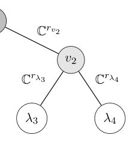
<figcaption class="paper-figure-caption"><b>Fig 1.</b> Figure 1: Binary TTN of order 4 with associated bond spaces.</figcaption>
</figure>
<figure class="paper-figure-card">
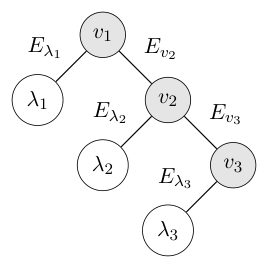
<figcaption class="paper-figure-caption"><b>Fig 2.</b> Figure 2: Tree tensor network of a tensor train decomposition of order 3 with bond spaces associated to the edges.</figcaption>
</figure>
<figure class="paper-figure-card">
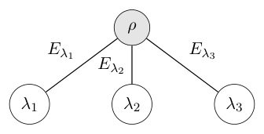
<figcaption class="paper-figure-caption"><b>Fig 3.</b> Figure 3: Tree tensor network of a subspace (Tucker) decomposition of order 3 with bond spaces associated to the edges.</figcaption>
</figure>
<figure class="paper-figure-card">
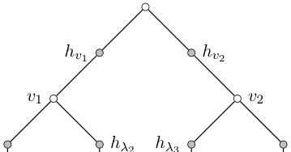
<figcaption class="paper-figure-caption"><b>Fig 4.</b> Figure 5: Comparison of a TTN of order four and its corresponding spaced tree.</figcaption>
</figure>
<figure class="paper-figure-card">
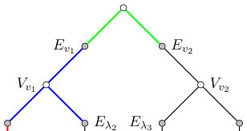
<figcaption class="paper-figure-caption"><b>Fig 5.</b> Figure 6: The spaced tree associated to the TTN in Figure 1, together with its associated vector spaces and the highlighted subtrees Tλ1, Tρ, and Tv1.</figcaption>
</figure>
</div>

<p><strong>Summary.</strong> This paper provides a deep algebraic characterization of Tree Tensor Network (TTN) varieties, proving they are defined by minors of matrix flattenings and are equivalent to general Markov models. Furthermore, it develops a combinatorial method to compute the degree of these varieties, which is a crucial invariant for understanding the complexity of quantum states represented by tensor networks.</p>
<p><strong>Why it may be interesting.</strong> The connection between tensor network representations (used extensively in simulating strongly correlated electron models) and algebraic geometry provides powerful, rigorous tools for analyzing the complexity and structure of quantum states.</p>
<details>
<summary>Detailed structure</summary>
<p><strong>Main problem.</strong> The paper aims to characterize the algebraic structure, specifically the prime ideal, of tree tensor network varieties ($ ext{TTN}_{T,V,r}$). It also focuses on computing the degree of these varieties for specific cases like order 3 tensor trains.</p>
<p><strong>Main result.</strong> The prime ideal of the TTN variety is generated by the minors of matrix flattenings, and the variety is shown to be equivalent to a general Markov model on the associated spaced tree. A combinatorial method is provided to compute the degree for order 3 tensor trains.</p>
<p><strong>Method.</strong> The authors employ algebraic geometry, viewing the variety as a projective algebraic variety defined by rank constraints on matrix flattenings. They use techniques involving initial ideals and non-intersecting path counting to determine the degree.</p>
<p><strong>Model / system.</strong> The core model is the Tree Tensor Network (TTN), which is a mathematical tool used to represent high-order tensors. These networks are relevant in quantum many-body physics, particularly for describing 2D quantum systems, and are related to tensor train and subspace decompositions.</p>
<p><strong>Key observables.</strong> The prime ideal generators (minors of matrix flattenings) and the degree of the variety are key algebraic observables.</p>
<p><strong>Important parameters / regimes.</strong> The structure of the rooted tree $T$, the attached vector spaces $V$, and the admissible rank sequence $r = (r_v)$ are the critical parameters.</p>
<p><strong>Assumptions / limitations.</strong> The analysis relies on relating the TTN variety to general Markov models and utilizing results from the theory of determinantal and initial ideals for degree computation.</p>
<p><strong>Figures summary.</strong> Figures illustrate the structure of TTNs (e.g., binary TTN of order 4) and show how the TTN structure realizes both TT and Subspace decompositions for order 3.</p>
<p><strong>Paper structure.</strong> The paper first establishes the algebraic characterization of the TTN variety using minors (Theorem 1.1). It then proves the equivalence between TTN, TT, and Subspace varieties (Proposition 2.5). Finally, it focuses on computing the degree of the TT variety using combinatorial methods based on initial ideals (Proposition 6.7).</p>
</details>
<details>
<summary>Abstract</summary>
<p>We show that tree tensor network varieties, including tensor train varieties, are general Markov models associated to spaced trees. This allows us to prove that the prime ideals of these varieties are generated by minors of matrix flattenings. In the case of tensor train varieties, we discuss whether these minors form a Gröbner basis and provide a combinatorial method to compute the degree for order $3$ tensor trains.</p>
</details>
<p><sub><a href="#top">↑ back to top</a></sub></p>

<p><a id="paper-2608.18743"></a></p>
<h3 id="technical-proposal-for-the-atom-interferometer-cern-experiment-aice-facility"><a href="http://arxiv.org/abs/2608.18743v1">Technical Proposal for the Atom Interferometer CERN Experiment (AICE) Facility</a></h3>
<p><strong>Authors:</strong> Gianluigi Arduini, Nadja Augst, Mark G. Bason, Charles Baynham, Andrea Bertoldi, Gianfranco Bertone, Diego Blas, Daniela Bortoletto, Sougato Bose, Roberto Ales Bozzi, Oliver Buchmueller, Tamara Alice Bud, Clare Burrage, Sergio Calatroni, John Carlton, Vassilis Charmandaris, Maria Luisa Chiofalo, Pierre Cladé, Jonathon Coleman, Fabio Corsanego, Albert De Roeck, Arnaud Devienne, Fabio Di Pumpo, John Ellis, Pierre Fayet, Chris Foot, Elina Fuchs, Naceur Gaaloul, Susan Gardner, Enno Giese, Eduardo Granados, Saïda Guellati-Khelifa, Michael Guinchard, Timo Hakulinen, Tiffany Harte, Richard Hobson, Michael Holynski, Angelo Infantino, Alex Kehagias, Eva Kilian-Rademacher, Wolfgang Korsch, Damien Lafarge, Samuel Lellouch, Lucas Lombriser, Elias Lopez Asamar, J. Luis Lopez-Gonzalez, Michele Maggiore, Charline Marcel, Anna Marchant, Christopher McCabe, Gaetano Mileti, Peter Millington, Jeremiah Mitchell, Noam Mouelle, Angel Navascues Cornago, François Pillon, Rosa Poggiani, Johann Rafelski, Ernst M. Rasel, Maike Reckermann, Albert Roura, Rui Samoes, Federico Sanchez Nieto, Jack Sander, Carlo Scarcia, Jesse Schelfhout, Wolfgang Schleich, Dennis Schlippert, Ulrich Schneider, Steven Schramm, Florian Schreck, Olga Sergijenko, Marcelle Soares-Santos, Guglielmo M. Tino, Jonathan N. Tinsley, Tristan Valenzuela, Daniel Valuch, Maurits van der Grinten, Klaasjan van Druten, Ville Vaskonen, Wolf von Klitzing, Michael Werner<br>
<strong>Type:</strong> experiment · <strong>Category:</strong> other · <strong>PDF:</strong> <a href="https://arxiv.org/pdf/2608.18743v1">https://arxiv.org/pdf/2608.18743v1</a><br>
<strong>Analysis basis:</strong> full PDF text, analyzed in chunks
<strong>Topic relevance:</strong> <code>analog quantum simulation</code> <strong>2/5</strong> · <code>interference shaping light</code> <strong>1/5</strong> · <code>quantum measurements</code> <strong>1/5</strong></p>
<div class="figure-strip-hint">↔ Scroll figures horizontally</div>
<div class="paper-figures-scroll">
<figure class="paper-figure-card">
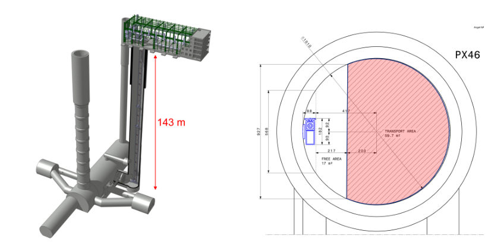
<figcaption class="paper-figure-caption"><b>Fig 1.</b> Figure 1: Left panel: General schematic view of the proposed implementation of AICE in the PX46 access shaft [1, 2]. Right panel: Horizontal cross section of the PX46 shaft, showing that the proposed location of AICE (blue) is compatible with the space required for transport of LHC components (red hatched area).</figcaption>
</figure>
<figure class="paper-figure-card">
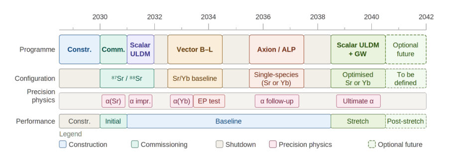
<figcaption class="paper-figure-caption"><b>Fig 2.</b> Figure 2: Indicative timeline of the science programme for AICE from mid-2028 to the end of 2042, showing the main science phases, the atom species in use, the short precision physics campaigns embedded within each science phase, and the projected facility operating levels. Shutdowns for reconfiguration are indicated with grey background, and an optional future campaign is shown with a dashed border. Detailed descriptions of the operational phases are given in Section 8.</figcaption>
</figure>
<figure class="paper-figure-card">
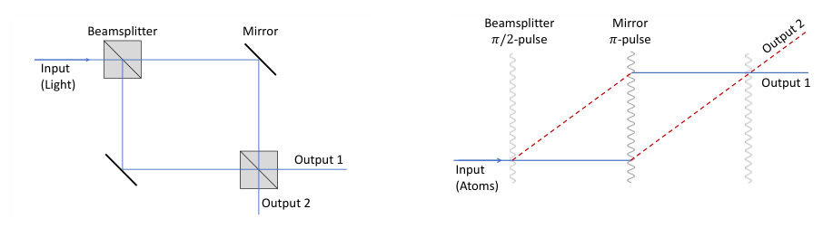
<figcaption class="paper-figure-caption"><b>Fig 3.</b> Figure 3: Left: a Mach-Zehnder optical interferometer. Right: the analogous atom inter- ferometer, with the ground state |g⟩represented by solid blue lines, the excited state |e⟩ by dashed red lines, and laser pulses by wavy lines. The π/2, π, π/2 pulse sequence acts as beamsplitter, mirror and beamsplitter respectively; the unlabelled rightmost pulse in the atom-interferometer schematic is the final π/2 beamsplitter pulse. Adapted from [51].</figcaption>
</figure>
<figure class="paper-figure-card">
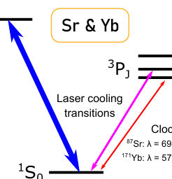
<figcaption class="paper-figure-caption"><b>Fig 4.</b> Figure 4: The transitions used for laser cooling and single-photon clock-transition interferom- etry in AICE. The long lifetimes of the 3P0 states in Sr [52] and Yb [53] suppress spontaneous- emission decoherence during the interferometer sequence. Indirect measurements of the Sr lifetime are in agreement with the direct measurement in Ref. [52] quoted here, but are in conflict with each other [55, 56].</figcaption>
</figure>
<figure class="paper-figure-card">
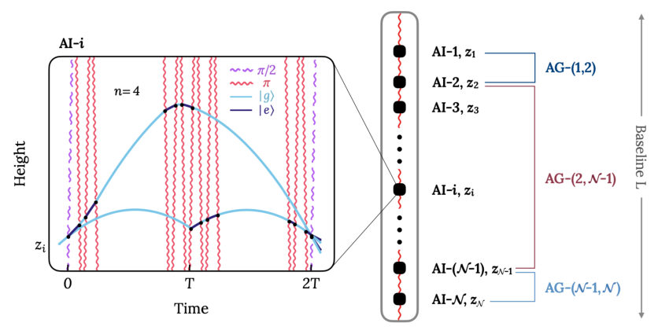
<figcaption class="paper-figure-caption"><b>Fig 5.</b> Figure 5: Conceptual illustration of the multi-source facility architecture to be adopted by AICE. Left: the space-time diagram of one interferometer with n = 4 LMT momentum kicks. Right: several interferometers spaced within a single vertical vacuum tower of length L, forming multiple gradiometer combinations over different baselines. Multiple source stations permit simultaneous measurements over different baselines and provide a scalable architecture for future large-scale facilities. In AICE the number of sources grows from Nsource ∼3 at commissioning towards ∼10 to 20 at later stages (cf. Table 2). Adapted from [61].</figcaption>
</figure>
</div>

<p><strong>Summary.</strong> This technical proposal outlines the AICE facility, a large-scale atom interferometer planned for CERN to search for ultralight dark matter and test fundamental physics principles like the Equivalence Principle. By utilizing long baselines and various atomic species, it aims to achieve unprecedented precision in measuring fundamental constants and gravitational effects.</p>
<p><strong>Why it may be interesting.</strong> This work represents a major application of advanced cold atom techniques (atom interferometry) to fundamental physics, pushing the scale of terrestrial measurements significantly beyond current limits. It requires expertise in vacuum technology, laser cooling, and quantum sensing.</p>
<details>
<summary>Detailed structure</summary>
<p><strong>Main problem.</strong> The primary goal is probing for bosonic ultralight dark matter (ULDM) in a mass range inaccessible to other experiments, with a secondary goal of exploring gravitational waves (GWs) in the $\sim 0.03-3$ Hz range.</p>
<p><strong>Main result.</strong> The proposal details the technical feasibility of the AICE facility, confirming that the PX46 site is mature and ready for installation to conduct these precision measurements.</p>
<p><strong>Method.</strong> The experiment uses long-baseline atom interferometry, employing ultracold atoms in a gradiometer geometry to measure phase shifts sensitive to external fields and fundamental constants.</p>
<p><strong>Model / system.</strong> The platform is the Atom Interferometer CERN Experiment (AICE), a $\mathcal{O}(100)$ m vertical interferometer utilizing ultracold $^{87}	ext{Sr}$ (with planned upgrades to $^{88}	ext{Sr}$ and $^{171}	ext{Yb}$) atoms.</p>
<p><strong>Key observables.</strong> Dark matter coupling strengths, gravitational wave signals, violation of the Equivalence Principle (EP), and the fine-structure constant ($\alpha$).</p>
<p><strong>Important parameters / regimes.</strong> Baseline length of $\sim 100$ m; GW frequency range of $\sim 0.03-3$ Hz; target sensitivity for $\alpha$ and EP violation.</p>
<p><strong>Assumptions / limitations.</strong> The proposal assumes the suitability and maturity of the PX46 site for installation without impacting LHC operations.</p>
<p><strong>Figures summary.</strong> Figure 1 provides a general schematic view of AICE in the PX46 shaft, confirming compatibility with LHC component transport.</p>
<p><strong>Paper structure.</strong> The proposal is structured to cover the motivation, the experimental concept (including gradiometer and multi-species operation), the detailed physics case (ULDM, $\alpha$, GWs), the technical detector systems, and the necessary site integration/civil engineering plans.</p>
</details>
<details>
<summary>Abstract</summary>
<p>We present the technical proposal for the Atom Interferometer CERN Experiment (AICE), a $\mathcal{O}(100)$ m vertical atom interferometer to be installed against the wall of the PX46 access shaft to the LHC. AICE is conceived as a versatile and flexible long-baseline atom-interferometry facility whose primary scientific goal is probing for bosonic ultralight dark matter (ULDM) in a mass range inaccessible to other experiments, with a secondary goal of pioneering the exploration of gravitational waves (GWs) with frequencies in the range ${\sim}$0.03-3 Hz as a pathfinder for future longer-baseline detectors. The initial configuration employs ultracold $^{87}$Sr atoms in a single-photon 698-nm interferometer with three shaft-based atom sources in a multi-source gradiometer geometry, supported by one surface reference source for laser stabilisation and diagnostics, to target scalar ULDM. Operation with $^{88}$Sr will give sensitivity to axion-like particles (ALPs), vector ULDM with $B-L$ couplings and violation of the principle of equivalence, while a $^{171}$Yb upgrade will improve the sensitivity to $B-L$ couplings and equivalence violations. Probing the Einstein equivalence principle (EP) and measuring $α$ will proceed in parallel with the ULDM searches. A conceptual feasibility study and a detailed technical implementation study have established that PX46 is a uniquely mature and implementation-ready site, with no technical showstoppers. Completing site preparation works during LS3 would enable the subsequent installation and operation of AICE without impacting HL-LHC operations. The detector design builds on the VLBAI and MAGIS experiments and the AION-10 Technical Design Report, scaling the strontium gradiometer architecture to the $\sim$100 m baseline. AICE is endorsed by the TVLBAI Proto-Collaboration, comprising 57 institutions in 22 countries.</p>
</details>
<p><sub><a href="#top">↑ back to top</a></sub></p>

<p><a id="paper-2608.18394"></a></p>
<h3 id="localized-excitons-and-exciton-phonon-coupling-in-antiferromagnetic-agcrp2s6"><a href="http://arxiv.org/abs/2608.18394v1">Localized Excitons and Exciton-Phonon Coupling in Antiferromagnetic AgCrP2S6</a></h3>
<p><strong>Authors:</strong> Jessica McDivitt, Dimitar Pashov, Mark van Schilfgaarde, Justin C. Johnson, Jeffrey L. Blackburn, Anna A. Berseneva, Swagata Acharya<br>
<strong>Type:</strong> both · <strong>Category:</strong> strongly correlated electrons · <strong>PDF:</strong> <a href="https://arxiv.org/pdf/2608.18394v1">https://arxiv.org/pdf/2608.18394v1</a><br>
<strong>Analysis basis:</strong> full PDF text, analyzed in chunks
<strong>Topic relevance:</strong> <code>Keldysh / 2PI / non-Gaussian methods</code> <strong>2/5</strong> · <code>Frenkel-Kontorova</code> <strong>1/5</strong></p>
<div class="figure-strip-hint">↔ Scroll figures horizontally</div>
<div class="paper-figures-scroll">
<figure class="paper-figure-card">
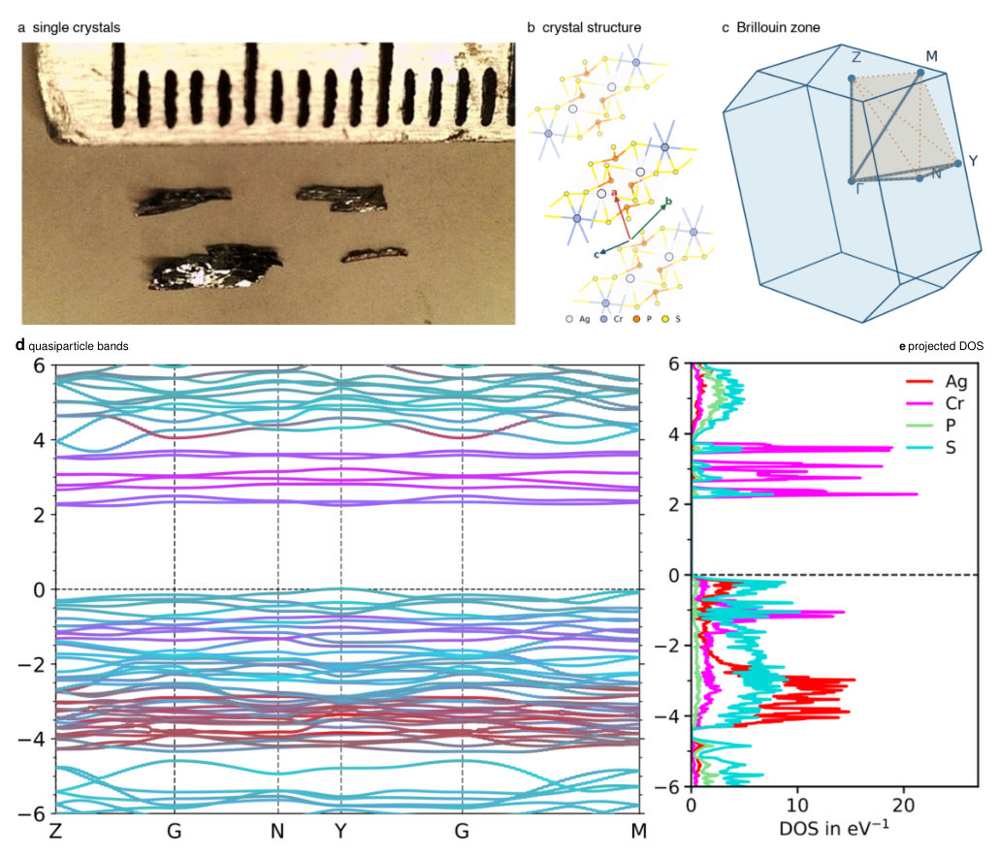
<figcaption class="paper-figure-caption"><b>Fig 1.</b> FIG. 1. Crystal and electronic structure of AgCrP2S6. (a) Representative crystals used for diffraction (full growth images in the Supplementary Information). (b) Crystal structure in an oblique projection, with Ag/Cr/P/S colors and crystallographic a, b, c axes indicated; neighbouring layers are faded for clarity but drawn at comparable marker size. (c) First Brillouin zone and high-symmetry path. (d) Quasiparticle band structure, with orbital/atom colouring matching the projected-DOS legend in (e). (e) Atom-projected electronic density of states. The structure colours in (b) are reused in the real-space exciton visualizations below.</figcaption>
</figure>
<figure class="paper-figure-card">
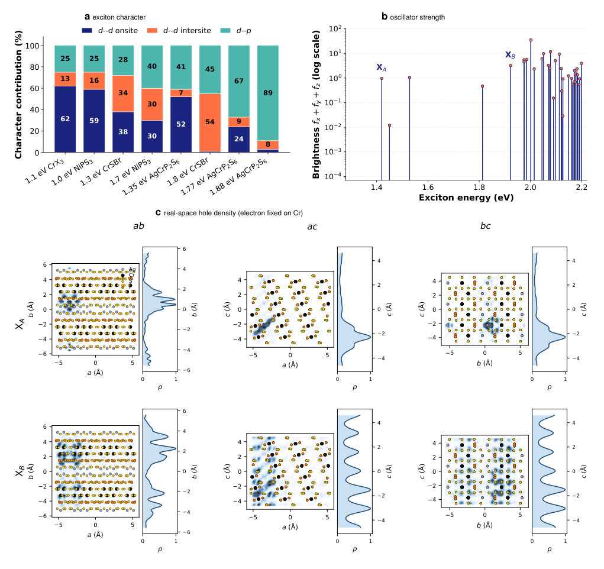
<figcaption class="paper-figure-caption"><b>Fig 2.</b> FIG. 2. Exciton character, oscillator strength, and photoluminescence. (a) Character composition for representative low-energy excitations in CrX3, NiPS3, CrSBr, and AgCrP2S6, sorted by total d–d weight. (b) Total dipole brightness fx + fy + fz on a logarithmic scale for every BSE eigenstate between 1.3 and 2.2 eV; XA marks the lowest bright state at 1.42 eV and XB the representative ligand-assisted state near 1.88 eV. (c) Real-space hole density for XA and XB with the electron fixed on a Cr site. Rows: XA and XB. Columns: ab, ac, and bc projections, each with the corresponding one-dimensional density ρ along the vertical axis of the map. XA remains tightly localized about a single...</figcaption>
</figure>
<figure class="paper-figure-card">
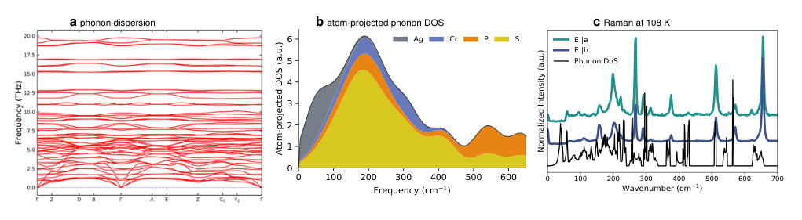
<figcaption class="paper-figure-caption"><b>Fig 3.</b> FIG. 3. Lattice dynamics of AgCrP2S6. (a) Phonon dispersion of the optimized structure, showing no unstable modes along the selected high-symmetry path. (b) Atom-projected phonon density of states. (c) Polarization-resolved Raman spectra at 108 K compared with the calculated phonon density of states (298 K data in the Supplementary Information).</figcaption>
</figure>
<figure class="paper-figure-card">
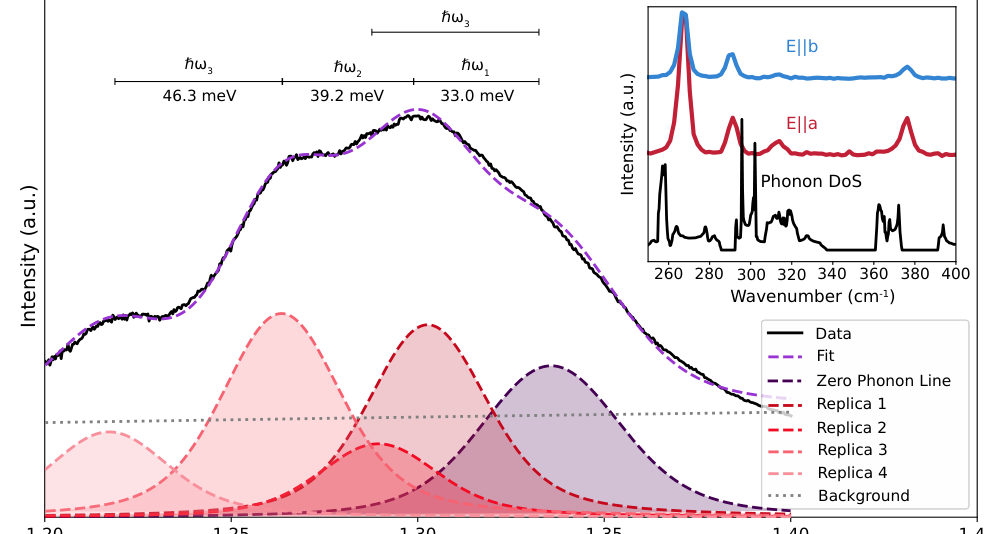
<figcaption class="paper-figure-caption"><b>Fig 4.</b> FIG. 4. Photoluminescence at 5 K with a multi-Voigt fit; replicas 1–4 are phonon sidebands of the XA recombination.</figcaption>
</figure>
</div>

<p><strong>Summary.</strong> This work characterizes the electronic and excitonic properties of AgCrP2S6, a magnetic semiconductor. By combining structural measurements with advanced many-body calculations, the authors determine that the low-energy optical excitation is a localized Frenkel exciton. This highlights the delicate balance between covalent bonding and magnetic interactions in determining optical response in correlated materials.</p>
<p><strong>Why it may be interesting.</strong> The detailed analysis of exciton localization and the explicit calculation of exciton-phonon coupling channels provide a rich model for understanding how lattice vibrations modulate electronic excitations in strongly correlated magnetic insulators.</p>
<details>
<summary>Detailed structure</summary>
<p><strong>Main problem.</strong> The study investigates the competition between covalency, magnetic localization, and structural symmetry in determining the nature of the lowest optical exciton in the antiferromagnetic semiconductor AgCrP2S6.</p>
<p><strong>Main result.</strong> The lowest exciton is found to be predominantly a localized Frenkel exciton, despite increased covalency, due to the combined effects of antiferromagnetism and Ag-site disorder.</p>
<p><strong>Method.</strong> The research combines single-crystal X-ray diffraction, Raman spectroscopy, lattice-dynamical calculations, and advanced many-body theory (vertex corrected Feynman diagrammatic approaches).</p>
<p><strong>Model / system.</strong> The system is the layered thiophosphate semiconductor AgCrP2S6, which features an antiferromagnetic Cr sublattice and nonmagnetic Ag sites, allowing for the study of competing electronic interactions.</p>
<p><strong>Key observables.</strong> Lowest exciton energy (~1.4 eV), exciton character (Frenkel vs. Wannier-Mott), exciton-phonon coupling channels, and quasiparticle gap.</p>
<p><strong>Important parameters / regimes.</strong> Temperature range (100-300 K), exciton binding energy (~770 meV), and the relative strength of p-d hybridization versus intersite coherence.</p>
<p><strong>Assumptions / limitations.</strong> The analysis assumes the material remains dynamically stable in its monoclinic phase and that the low-energy optical response is dominated by $q=0$ excitations.</p>
<p><strong>Figures summary.</strong> Figures illustrate the crystal structure, band structure along high-symmetry paths, and detailed analysis of the exciton character, real-space hole density, and phonon dispersion/Raman spectra.</p>
<p><strong>Paper structure.</strong> The paper follows a structure moving from structural characterization (XRD, lattice dynamics) to electronic structure (quasiparticle gap) and finally to the detailed excitonic and exciton-phonon coupling analysis using advanced many-body techniques.</p>
</details>
<details>
<summary>Abstract</summary>
<p>AgCrP2S6 combines a low-symmetry thiophosphate framework with an antiferromagnetic Cr sublattice and nonmagnetic Ag sites, providing a setting in which covalency and magnetic localization compete in the low-energy optical response. We combine single-crystal x-ray diffraction, Raman spectroscopy, lattice-dynamical calculations, and self-consistent vertex corrected Feynman diagrammatic many-body approaches to determine the structural, electronic, and excitonic properties of bulk AgCrP2S6. The material remains monoclinic between 100 and 300 K, with additional Ag-site disorder resolved at low temperature, and the optimized structure is dynamically stable. The many-body calculations yield a reduced quasiparticle gap relative to Cr trihalides, but the lowest excitons remain predominantly local: the calculated low-energy (~1.4 eV) excitation cluster is best described as a weakly bright, strongly anisotropic Frenkel exciton with dominant onsite d-d character and substantial ligand-assisted d-p admixture. Symmetry analysis in the C2h setting identifies this state as predominantly Bu and constrains its leading exciton-phonon coupling channels to Ag diagonal renormalization and Bg-mediated bright-dark mixing. These results place AgCrP2S6 in a localized excitonic regime in which the stronger p-d hybridization, relative to the more ionic Cr trihalides, narrows the quasiparticle gap, while the antiferromagnetic exchange and Ag-site dilution disfavor the intersite coherence associated with strongly delocalized low-energy excitons.</p>
</details>
<p><sub><a href="#top">↑ back to top</a></sub></p>

<p><a id="paper-2608.18985"></a></p>
<h3 id="rushhour-a-dynamically-reconfigurable-lattice-surgery-architecture"><a href="http://arxiv.org/abs/2608.18985v1">RushHour: A Dynamically Reconfigurable Lattice-Surgery Architecture</a></h3>
<p><strong>Authors:</strong> Nathaniel Tornow, Aleksandra Świerkowska, Peter Wegmann, Pramod Bhatotia<br>
<strong>Type:</strong> theory · <strong>Category:</strong> quantum information and computing · <strong>PDF:</strong> <a href="https://arxiv.org/pdf/2608.18985v1">https://arxiv.org/pdf/2608.18985v1</a><br>
<strong>Analysis basis:</strong> full PDF text, analyzed in chunks
<strong>Topic relevance:</strong> <code>QC/QI experiment</code> <strong>2/5</strong> · <code>quantum measurements</code> <strong>1/5</strong></p>
<div class="figure-strip-hint">↔ Scroll figures horizontally</div>
<div class="paper-figures-scroll">
<figure class="paper-figure-card">
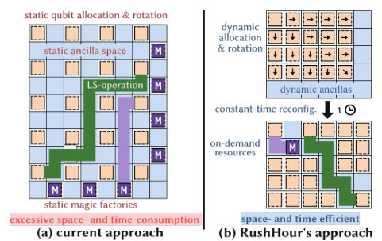
<figcaption class="paper-figure-caption"><b>Fig 1.</b> Figure 1. Static vs. dynamic lattice surgery. (a) Current architectures fix qubit allocation, ancilla space, and magic- state factories ahead of execution. (b) RushHour allocates, rotates, and reconfigures dynamically and on demand.</figcaption>
</figure>
<figure class="paper-figure-card">
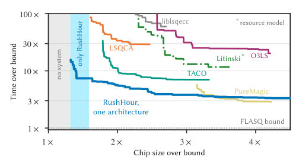
<figcaption class="paper-figure-caption"><b>Fig 2.</b> Figure 2. Best runtime by chip size, normalized by the FLASQ bound [21]. Gray: no system runs, cyan: only RushHour.</figcaption>
</figure>
<figure class="paper-figure-card">
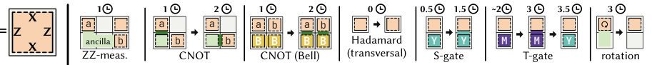
<figcaption class="paper-figure-caption"><b>Fig 3.</b> Figure 3. Surface-code patches and LS operations [21, 24]. All times are in logical rounds. M: a cultivated magic state [12] (occupying its tile for 2–3 expected rounds), Y: the |𝑌⟩ancilla [10]. Dashed edges mark the 𝑋boundary.</figcaption>
</figure>
<figure class="paper-figure-card">
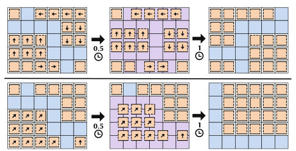
<figcaption class="paper-figure-caption"><b>Fig 4.</b> Figure 4. Walking qubits. Parallel patch slides reshape the free space in one round [21, 26].</figcaption>
</figure>
<figure class="paper-figure-card">
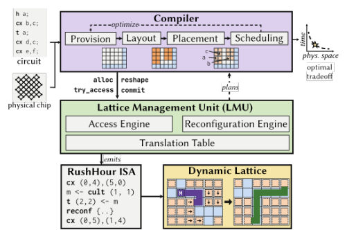
<figcaption class="paper-figure-caption"><b>Fig 5.</b> Figure 5. RushHour overview. The compiler (§6) sched- ules against the LMU interface (§5). The LMU manages the dynamic lattice and realizes gates as RushHour ISA instruc- tions (§4).</figcaption>
</figure>
</div>

<p><strong>Summary.</strong> This paper introduces RushHour, a novel hardware-compiler co-design for performing lattice surgery in fault-tolerant quantum computing. It overcomes the rigidity of existing methods by enabling dynamic reconfiguration of the quantum lattice in real-time. This results in significantly improved resource efficiency, allowing complex quantum algorithms to run on much smaller and faster physical quantum chips.</p>
<p><strong>Why it may be interesting.</strong> While focused on superconducting/trapped-ion architectures, the core concepts of dynamic resource management, scheduling, and hardware-software co-design are highly relevant to optimizing complex quantum control protocols.</p>
<details>
<summary>Detailed structure</summary>
<p><strong>Main problem.</strong> Achieving practical fault-tolerant quantum computing requires efficient lattice surgery (LS) to fit large algorithms onto resource-constrained quantum chips.</p>
<p><strong>Main result.</strong> The proposed RushHour architecture significantly improves resource utilization, enabling benchmarks to run on much smaller chips and achieving median speedups of 2.0-7.2$ imes$ on space-constrained hardware.</p>
<p><strong>Method.</strong> The authors propose a hardware-compiler co-design called RushHour, which formalizes dynamic lattice management via a new ISA and a Lattice Management Unit (LMU).</p>
<p><strong>Model / system.</strong> The system models fault-tolerant quantum computation using the surface code, where logical operations are performed via dynamic lattice surgery (LS) on patches of physical qubits.</p>
<p><strong>Key observables.</strong> Space-time trade-off, benchmark success rate on small chips, execution time (speedup factor), and resource footprint.</p>
<p><strong>Important parameters / regimes.</strong> Chip size constraints, logical error exposure, and the efficiency of dynamic reconfiguration (achieved in a single round).</p>
<p><strong>Assumptions / limitations.</strong> The approach assumes that dynamic lattice management can be abstracted and scheduled efficiently by the compiler, allowing for non-blocking reconfigurations.</p>
<p><strong>Figures summary.</strong> Figures illustrate the comparison between static vs. dynamic LS, the performance advantage of RushHour across different chip sizes, and the detailed structure of the dynamic lattice configuration ($\Sigma$).</p>
<p><strong>Paper structure.</strong> The paper introduces the limitations of static LS, proposes the dynamic LS model, details the RushHour ISA and LMU components, and concludes with extensive benchmarking comparing RushHour against multiple state-of-the-art compilers.</p>
</details>
<details>
<summary>Abstract</summary>
<p>Practical fault-tolerant quantum computing (FTQC) requires efficient lattice surgery (LS), so that large algorithms fit on resource-constrained quantum chips. Existing approaches, however, are rigid: qubits, routing space, and resource states are allocated ahead of execution, which prevents running on small chips, leaves statically scheduled executions with large time overheads, and fixes each design at a single area of the space-time trade-off.   We present dynamic LS, which enables efficient reconfiguration of the ancilla space, just-in-time allocation of resource states, and dynamic rotations of logical qubits, thereby spanning the entire space-time trade-off with a single, unified approach. We realize dynamic LS with RushHour through a hardware-compiler co-design: the RushHour ISA formalizes and programs our dynamic lattice model, the Lattice Management Unit abstracts dynamic lattice management and performs efficient lattice reconfiguration, and the RushHour Compiler compiles logical circuits for physical chips into optimized ISA programs while pipelining instructions.   We evaluate RushHour against six state-of-the-art compilers and two resource models. On the smallest chips, 86% of benchmarks run only with RushHour, while existing approaches require 1.2-3.5$\times$ larger chips. On space-constrained early-FTQC chips, RushHour runs a median 2.0-7.2$\times$ faster than the best feasible alternative, while achieving results comparable to the state of the art on very large chips. RushHour's constructive results run 4.8$\times$ from an idealized-machine resource limit.</p>
</details>
<p><sub><a href="#top">↑ back to top</a></sub></p>

<p><a id="paper-2608.18714"></a></p>
<h3 id="a-single-design-choice-determines-whether-machine-learning-models-of-materials-make-physically-impossible-predictions"><a href="http://arxiv.org/abs/2608.18714v1">A single design choice determines whether machine learning models of materials make physically impossible predictions</a></h3>
<p><strong>Authors:</strong> Can Polat, Mustafa Kurban, Erchin Serpedin, Hasan Kurban<br>
<strong>Type:</strong> theory · <strong>Category:</strong> disordered systems and neural networks · <strong>PDF:</strong> <a href="https://arxiv.org/pdf/2608.18714v1">https://arxiv.org/pdf/2608.18714v1</a><br>
<strong>Analysis basis:</strong> full PDF text, analyzed in chunks
<strong>Topic relevance:</strong> <code>analog quantum simulation</code> <strong>2/5</strong></p>
<div class="figure-strip-hint">↔ Scroll figures horizontally</div>
<div class="paper-figures-scroll">
<figure class="paper-figure-card">
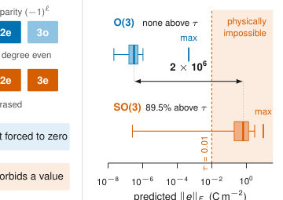
<figcaption class="paper-figure-caption"><b>Fig 1.</b> Figure 1 A label-free test of physical validity. a, A centrosymmetric crystal, one unit cell drawn heavy among its neighbours; each atom’s partner sits at −𝐫, reached through the inversion centre (crossed circle). Neumann’s principle requires the piezoelectric tensor to be invariant under every point-group operation, while parity sends the rank-3 polar tensor to its negative; the two demands force 𝑒= −𝑒, hence 𝑒= 0 exactly, on every centrosymmetric crystal and for any model that respects both. b, The two arms are built from one code path and differ in one bit. Feature irreducible representations run to 𝑙max = 3 in both: the O(3) arm carries the natural spherical-harmonic parity (−1)𝑙, the...</figcaption>
</figure>
<figure class="paper-figure-card">
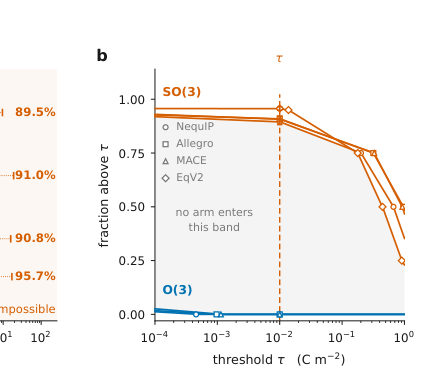
<figcaption class="paper-figure-caption"><b>Fig 2.</b> Figure 2 Parity labels separate possible from impossible predictions by six orders of magnitude. a, Dis- tribution of the predicted piezoelectric magnitude ‖𝑒‖𝐹on the 2,000 centrosymmetric crystals (idealized coordinates), for the O(3) and SO(3) arms of each core. Symmetry forces the true value to zero, so the tinted region above the operating threshold 𝜏= 0.01 C m−2 contains only physically impossible predictions. Box and whisker conventions as in Fig. 1c, here with each percentile taken as the mean of per-seed percentiles over 3 seeds; the capped stem to the right of each box reaches the single largest prediction. The lower tail of each SO(3) whisker is the class-m̄3m population, 8.3% of...</figcaption>
</figure>
<figure class="paper-figure-card">
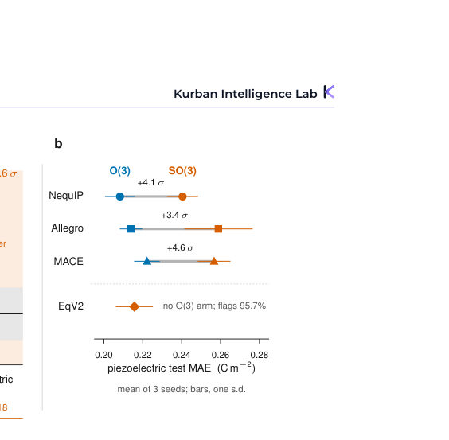
<figcaption class="paper-figure-caption"><b>Fig 3.</b> Figure 3 The parity gap predicts where the labels matter, and where they do not. a, Difference in test mean absolute error between the SO(3) and O(3) arms, in units of the pooled per-seed standard deviation 𝜎, for the three matched cores on all four targets; positive values favour the O(3) arm. Markers are jittered horizontally within each target for legibility. The grey band marks one pooled standard deviation, within which a three- seed comparison cannot resolve a difference and from which we claim no significance. Beneath each target is the parity of its tensor and the parity gap it carries on the evaluated population: 𝛾= 0 identically for the two parity-even targets by Theorem 1, and...</figcaption>
</figure>
<figure class="paper-figure-card">
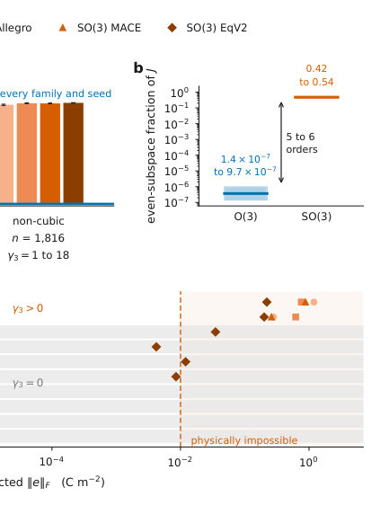
<figcaption class="paper-figure-caption"><b>Fig 4.</b> Figure 4 The missing guarantee is specifically parity, and it is differentiable. Markers and colours are shared across panels: blue, the O(3) arms; the four orange tints, the SO(3) arms of each core. a, False-flag fraction of the SO(3) arms, split by the point-group family of the evaluated crystal and labelled by the parity gap 𝛾3 that Theorem 1 assigns to it: m̄3m, whose proper-rotation subgroup 432 alone annihilates every rank-3 piezoelectric tensor, so 𝛾3 = 0; m̄3, where 𝛾3 = 1; and the non-cubic classes, where 𝛾3 runs from 1 to 18. Bars are means over 3 seeds and error bars are 95% percentile-bootstrap confidence intervals over structures within each family; the m̄3 interval is wide...</figcaption>
</figure>
</div>

<p><strong>Summary.</strong> This work demonstrates that for ML models predicting material properties, the inclusion of parity labels in the model's features is the single design element that dictates whether the model respects exact physical symmetries. Models lacking this label frequently predict physically impossible, non-zero values for properties that must vanish due to crystal symmetry.</p>
<p><strong>Why it may be interesting.</strong> While focused on condensed matter ML, the rigorous mathematical framework for enforcing exact physical laws (like zero tensors) through structural design choices is highly relevant to building reliable quantum simulation models.</p>
<details>
<summary>Detailed structure</summary>
<p><strong>Main problem.</strong> The paper addresses whether machine learning models designed for materials can predict physically impossible properties due to insufficient incorporation of exact symmetry constraints.</p>
<p><strong>Main result.</strong> The ability to enforce exact symmetry constraints (like zero for centrosymmetric materials) is determined solely by a single design choice: whether the model's features are explicitly labeled with parity information.</p>
<p><strong>Method.</strong> The authors derive the 'parity gap' from group theory to quantify the difference between approximate (rotational) and exact symmetry constraints, testing this using ML models trained on materials data.</p>
<p><strong>Model / system.</strong> The system is crystalline materials, and the models are machine-learned surrogates for first-principles calculations, specifically tested on properties like the piezoelectric tensor.</p>
<p><strong>Key observables.</strong> The predicted magnitude of the piezoelectric tensor, and the 'false-flag fraction' (percentage of predictions exceeding a physical threshold when the true value is zero).</p>
<p><strong>Important parameters / regimes.</strong> The parity label (a binary design choice), the symmetry group ($    ext{E}(3)$ vs $ ext{SO}(3)$), and the physical threshold ($   au = 0.01   ext{ C m}^{-2}$).</p>
<p><strong>Assumptions / limitations.</strong> The analysis assumes the validity of permutation and translation invariance, and crucially, that the parity label is an 'upstream' design choice.</p>
<p><strong>Figures summary.</strong> Figures compare the predictions of parity-labelled ($  ext{O}(3)$) vs. parity-blind ($    ext{SO}(3)$) models for the piezoelectric tensor, showing a separation of six orders of magnitude, with the $   ext{SO}(3)$ model frequently predicting forbidden, non-zero responses.</p>
<p><strong>Paper structure.</strong> The paper establishes the theoretical distinction between approximate and exact symmetry constraints, derives the parity gap criterion, and then empirically demonstrates this gap by comparing the performance of ML architectures that either incorporate or ignore parity labels when predicting physical tensors.</p>
</details>
<details>
<summary>Abstract</summary>
<p>Machine-learned models are replacing first-principles calculations across materials discovery, and physical symmetry is the central guarantee built into them. The debate over how much symmetry to hard-wire rather than learn has run on rotations, where a symmetry error is an approximation error. Some constraints are exact: symmetry forces certain property tensors to exactly zero, so a nonzero prediction is physically impossible rather than inaccurate. Here we show that whether a model can make such predictions is decided before training by one rarely reported design bit, whether its features carry parity labels, and derive a criterion, the parity gap, that computes from group theory alone which properties and crystals are exposed. Across matched architecture pairs differing only in that bit, evaluated on two thousand centrosymmetric crystals whose piezoelectric tensor must vanish, parity-labelled arms sit at the floating-point floor while rotation-only arms predict forbidden responses on 90-96% of crystals, six orders of magnitude apart, at no accuracy cost. Training on explicit zeros does not recover exactness, and a head on a frozen universal potential inherits its backbone's symmetry group. One reflection at random initialization verifies the label in seconds.</p>
</details>
<p><sub><a href="#top">↑ back to top</a></sub></p>

<p><a id="paper-2608.18440"></a></p>
<h3 id="asymptotic-entanglement-hiding-under-stabilizer-restrictions"><a href="http://arxiv.org/abs/2608.18440v1">Asymptotic Entanglement Hiding under Stabilizer Restrictions</a></h3>
<p><strong>Authors:</strong> Jicun Li, Wei Xie, Jun Wu, Honglin Chen, Xiang-Yang Li<br>
<strong>Type:</strong> theory · <strong>Category:</strong> quantum information and computing · <strong>PDF:</strong> <a href="https://arxiv.org/pdf/2608.18440v1">https://arxiv.org/pdf/2608.18440v1</a><br>
<strong>Analysis basis:</strong> full PDF text, analyzed in chunks
<strong>Topic relevance:</strong> <code>quantum measurements</code> <strong>2/5</strong></p>
<div class="figure-strip-hint">↔ Scroll figures horizontally</div>
<div class="paper-figures-scroll">
<figure class="paper-figure-card">
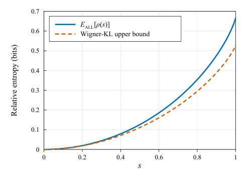
<figcaption class="paper-figure-caption"><b>Fig 1.</b> FIG. 1. Mixed-stabilizer visibility gap. For ρ(s) = (1 −s)σ∗+ sρ∗, the solid curve gives the exact unre- stricted value EALL(ρ(s)) = D(ρ(s)∥σ∗). The dashed curve is DKL(Wρ(s)∥Wσ∗), the Wigner–KL upper bound on ESTAB(ρ(s)). Since this certified upper bound is strictly smaller than EALL(ρ(s)) for every s &gt; 0, stabilizer measure- ments are strictly weaker than unrestricted measurements for this mixed-stabilizer family.</figcaption>
</figure>
</div>

<p><strong>Summary.</strong> This paper establishes a fundamental separation between entanglement and 'magic' by quantifying how much entanglement remains visible when measurements are restricted to stabilizer operations. Through explicit constructions, the authors show that entanglement can be asymptotically hidden, meaning the distillable entanglement can be large while the stabilizer-visible entanglement vanishes. This reveals intrinsic limitations on entanglement extraction using only stabilizer operations.</p>
<p><strong>Why it may be interesting.</strong> This work provides a rigorous, quantitative measure of how much quantum correlation is 'hidden' from computation protocols relying only on stabilizer measurements, which is crucial for understanding the limits of fault-tolerant quantum computation.</p>
<details>
<summary>Detailed structure</summary>
<p><strong>Main problem.</strong> The paper investigates the fundamental operational difference between entanglement visible under general measurements (LOCC) versus entanglement visible only through stabilizer measurements.</p>
<p><strong>Main result.</strong> They demonstrate 'magic-free asymptotic entanglement hiding,' showing that highly entangled states can possess arbitrarily large LOCC-distillable entanglement while having vanishing entanglement visible under stabilizer restrictions.</p>
<p><strong>Method.</strong> The analysis involves constructing explicit convex mixtures of stabilizer states and applying bounds derived from the relative entropy and Wigner function analysis to quantify the gap between different entanglement measures.</p>
<p><strong>Model / system.</strong> The study uses bipartite quantum states, specifically focusing on $N$ qutrits per party, Haar-random pure states, and Werner states, all analyzed within the framework of stabilizer operations.</p>
<p><strong>Key observables.</strong> Stabilizer-visible entanglement ($ ext{ESTAB}$), Unrestricted visible entanglement ($   ext{EALL}$), and LOCC-distillable entanglement ($ED_{LOCC}$).</p>
<p><strong>Important parameters / regimes.</strong> The number of qutrits per party ($N$), the local dimension ($p$, an odd prime), and the state parameter ($t$ for Werner states).</p>
<p><strong>Assumptions / limitations.</strong> The core assumption is the restriction of measurements to the set of stabilizer operations, which defines the 'magic' resource theory.</p>
<p><strong>Figures summary.</strong> Figure 1 illustrates the entanglement hiding mechanism by comparing the unrestricted visible entanglement (solid curve) to the stabilizer-restricted bound (dashed curve) for an interpolated state.</p>
<p><strong>Paper structure.</strong> The paper builds by first defining the measures, then proving the gap for specific states (Werner states, mixed stabilizer states), and finally establishing the asymptotic scaling laws for general mixed stabilizer states.</p>
</details>
<details>
<summary>Abstract</summary>
<p>Entanglement is central to quantum information processing, while stabilizer operations underpin fault-tolerant quantum computation. We ask how much entanglement remains visible or distillable under stabilizer restrictions. We quantify stabilizer-visible entanglement by restricting the measured relative entropy of entanglement to stabilizer measurements, thereby obtaining converse bounds on entanglement distillation under stabilizer operations. We demonstrate magic-free asymptotic entanglement hiding: we construct explicit convex mixtures of pure stabilizer states on $N$ qutrits per party whose unrestricted visible entanglement and LOCC-distillable entanglement both grow as $Ω(N/\log N)$, while their stabilizer-visible and stabilizer-distillable entanglement vanish as $N\to\infty$. Thus, an unbounded amount of LOCC-distillable entanglement carried by stabilizer states can become asymptotically invisible and undistillable under stabilizer restrictions. We further prove that stabilizer-visible entanglement is $O(1)$ with high probability for Haar-random pure states despite extensive unrestricted visibility, and vanishes uniformly over entangled Werner states as the local dimension grows through odd primes. These results reveal a fundamental separation between entanglement and magic as resources, exposing intrinsic limits on entanglement extraction using stabilizer operations.</p>
</details>
<p><sub><a href="#top">↑ back to top</a></sub></p>

<p><a id="paper-2608.18332"></a></p>
<h3 id="generalizing-pauli-checks-for-qudit-based-quantum-error-detection-and-mitigation"><a href="http://arxiv.org/abs/2608.18332v1">Generalizing Pauli Checks for Qudit-based Quantum Error Detection and Mitigation</a></h3>
<p><strong>Authors:</strong> Noble Agyeman-Bobie, Quinn Langfitt, Salahedeen Issa, Nikos Hardavellas, Kaitlin N. Smith<br>
<strong>Type:</strong> theory · <strong>Category:</strong> quantum information and computing · <strong>PDF:</strong> <a href="https://arxiv.org/pdf/2608.18332v1">https://arxiv.org/pdf/2608.18332v1</a><br>
<strong>Analysis basis:</strong> full PDF text, analyzed in chunks
<strong>Topic relevance:</strong> <code>quantum measurements</code> <strong>2/5</strong></p>
<div class="figure-strip-hint">↔ Scroll figures horizontally</div>
<div class="paper-figures-scroll">
<figure class="paper-figure-card">
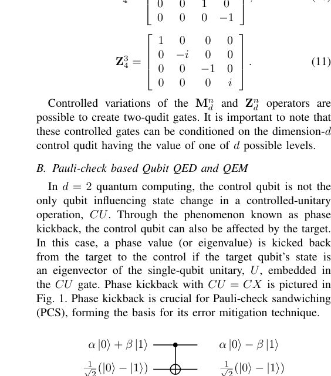
<figcaption class="paper-figure-caption"><b>Fig 1.</b> Fig. 1. Phase kickback in qubits. Here, a phase of -1 gets kicked back onto the basis state |1⟩of the top qubit.</figcaption>
</figure>
<figure class="paper-figure-card">
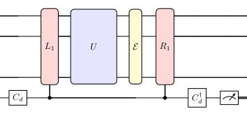
<figcaption class="paper-figure-caption"><b>Fig 2.</b> Fig. 2. General PCS circuit layout. The red unitaries L1 and R1 represent the Pauli checks that sandwich the main payload circuit U. Measurement of the ancillas provides detection of the error channel ε. The Chrestenson gate Cd is equivalent to the Hadamard gate when d = 2.</figcaption>
</figure>
<figure class="paper-figure-card">
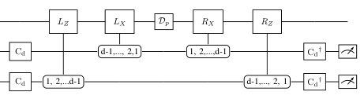
<figcaption class="paper-figure-caption"><b>Fig 3.</b> Fig. 3. Generalized PCS circuit for arbitrary error detection. Again, two ancillas are used as syndrome registers since two sets of checks are used.</figcaption>
</figure>
<figure class="paper-figure-card">
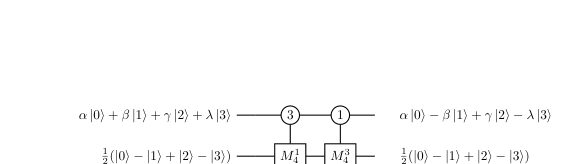
<figcaption class="paper-figure-caption"><b>Fig 4.</b> Fig. 4. Phase kickback in dimension-4 Hilbert Space. Here, a phase of -1 gets kicked back onto the basis states of |1⟩and |3⟩of the top ququart.</figcaption>
</figure>
<figure class="paper-figure-card">
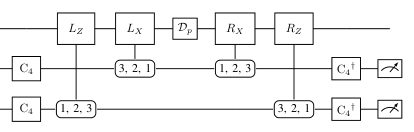
<figcaption class="paper-figure-caption"><b>Fig 5.</b> Fig. 7. PCS Ququart circuit for arbitrary error detection. Here, two ancillas are used as syndrome registers since two sets of checks are used.</figcaption>
</figure>
</div>

<p><strong>Summary.</strong> This paper extends Pauli Check Sandwiching (PCS) from qubits to qudits of arbitrary dimension $d$ for quantum error detection and mitigation. It develops generalized checks using the Heisenberg-Weyl set, proving that these checks can deterministically identify arbitrary qudit errors. The results validate the technique numerically, showing high fidelity preservation even under realistic error rates.</p>
<p><strong>Why it may be interesting.</strong> This work directly advances the theoretical toolkit for fault-tolerant quantum computation by extending established error correction paradigms to higher-dimensional quantum systems (qudits), which are relevant for many physical implementations.</p>
<details>
<summary>Detailed structure</summary>
<p><strong>Main problem.</strong> The paper generalizes the Pauli Check Sandwiching (PCS) technique, traditionally used for qubit error detection and mitigation, to arbitrary qudit dimensions.</p>
<p><strong>Main result.</strong> The generalized PCS protocol successfully detects arbitrary Heisenberg-Weyl errors in qudit systems, achieving unit fidelity in the noiseless check limit.</p>
<p><strong>Method.</strong> It introduces generalized left and right Pauli checks using the Heisenberg-Weyl operator set, relying on commutation relations and Fourier orthogonality for error syndrome extraction.</p>
<p><strong>Model / system.</strong> The model involves qudit systems of arbitrary dimension $d$, where error detection is performed by sandwiching the computation between controlled Pauli checks.</p>
<p><strong>Key observables.</strong> Error-mitigated fidelity (validated above 97.5% for $d=2$ to $d=9$), and the deterministic mapping of an error to a unique ancilla readout.</p>
<p><strong>Important parameters / regimes.</strong> The dimension $d$ of the qudit space, and the depolarizing error rate $p$.</p>
<p><strong>Assumptions / limitations.</strong> The analysis assumes that the error channel can be decomposed into the Pauli (or Heisenberg-Weyl) basis, and that the checks themselves are noiseless.</p>
<p><strong>Figures summary.</strong> Figures illustrate phase kickback in qubits and the general PCS circuit layout for both qubit and qudit systems, showing the structure of the error checks.</p>
<p><strong>Paper structure.</strong> The paper first introduces the generalization of PCS to qudits using the Heisenberg-Weyl set, mathematically proves the detection capability via commutation relations, and concludes with numerical validation on specific circuits (Mod-2 and GHZ-2) across various dimensions.</p>
</details>
<details>
<summary>Abstract</summary>
<p>Pauli Check Sandwiching (PCS) is a quantum error detection (QED) technique that protects a quantum circuit by utilizing a pair of controlled Pauli operators, or checks, and detecting errors that anti-commute with the checks. Further, PCS can be used for quantum error mitigation (QEM) via post-selection based on the Pauli check syndrome values. Currently, PCS is leveraged in the qubit space. In this paper, we introduce a generalized approach for applying PCS-based QED and QEM to quantum information of arbitrary dimension in the Hilbert space. Each pair of these extended checks consists of a sequence of gates in the Heisenberg-Weyl operator set that extend Pauli operators into the qudit space. These qudit checks use at least one ancilla qudit to detect qudit errors that do not commute with the unitary selected for the check. We show that our proposed methods for qudit QED can detect errors of arbitrary dimensions. More specifically, we prove that an arbitrary Heisenberg-Weyl error maps deterministically to a unique ancilla readout, and further, post-selecting on the $|0 \rangle$ readout guarantees unit fidelity in the noiseless check limit. We validate these findings numerically across dimensions $d=2$ through $d=9$, achieving error-mitigated fidelities above $97.5\% $ under realistic depolarizing error rates.</p>
</details>
<p><sub><a href="#top">↑ back to top</a></sub></p>

<p><a id="paper-2608.18862"></a></p>
<h3 id="cluster-representation-of-renormalization-group-transformations-and-a-rigorous-proof-for-convergence-of-the-rg-flow-of-the-ising-model-to-trivial-fixed-points-away-from-criticality"><a href="http://arxiv.org/abs/2608.18862v1">Cluster Representation of Renormalization Group Transformations and a Rigorous Proof for Convergence of the RG-Flow of the Ising Model to Trivial Fixed Points away from Criticality</a></h3>
<p><strong>Authors:</strong> Fabio Arz<br>
<strong>Type:</strong> theory · <strong>Category:</strong> statistical mechanics · <strong>PDF:</strong> <a href="https://arxiv.org/pdf/2608.18862v1">https://arxiv.org/pdf/2608.18862v1</a><br>
<strong>Analysis basis:</strong> full PDF text, analyzed in chunks
<strong>Topic relevance:</strong> <code>analog quantum simulation</code> <strong>1/5</strong> · <code>driven-dissipative phase transition</code> <strong>1/5</strong> · <code>non-equilibrium universality</code> <strong>1/5</strong></p>
<div class="figure-strip-hint">↔ Scroll figures horizontally</div>
<div class="paper-figures-scroll">
<figure class="paper-figure-card">
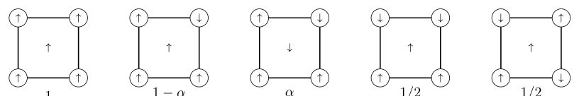
<figcaption class="paper-figure-caption"><b>Fig 1.</b> Figure 2: The possible transition values for the 2 × 2 →1 coarse-graining, respecting R1-R4. The values of the other possible block-configurations are determined through R1 and R2.</figcaption>
</figure>
<figure class="paper-figure-card">
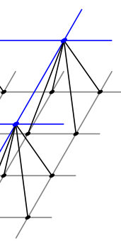
<figcaption class="paper-figure-caption"><b>Fig 2.</b> Figure 4: RG-admissible graph-structure for a 2 × 2 →1 coarse-graining on the 2D square lattice.</figcaption>
</figure>
<figure class="paper-figure-card">
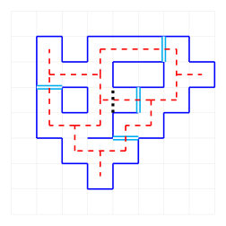
<figcaption class="paper-figure-caption"><b>Fig 3.</b> Figure 6: The solid edges represent a possible configuration ω′ with the dotted edge corresponding to ei, which is set to 0 for ω′ and 1 for ω. The dashed edges represent the dual cluster Ce∗ i (ω′∗). At last, the double edges are additional open edges in ω that are closed in ω′. It is clear that spin configurations on ω and ω′ can always be chosen such that they match everywhere except on the few islands inside of Ce∗ i (ω′∗).</figcaption>
</figure>
<figure class="paper-figure-card">
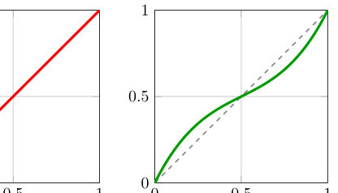
<figcaption class="paper-figure-caption"><b>Fig 4.</b> Figure 7: The three possible dynamics of gα depending on the value of α.</figcaption>
</figure>
<figure class="paper-figure-card">
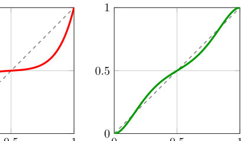
<figcaption class="paper-figure-caption"><b>Fig 5.</b> Figure 8: The dynamics of f for different values of the input parameters.</figcaption>
</figure>
</div>

<p><strong>Summary.</strong> This paper bridges the gap between the Random Cluster Model and the Renormalization Group theory to provide rigorous mathematical proofs for the RG flow of the Ising model away from its critical point. By mapping the RG flow onto a simple 1D dynamical system based on cluster connectivity, the authors prove convergence to high and low-temperature fixed points. This work advances the mathematical understanding of critical phenomena in statistical mechanics.</p>
<p><strong>Why it may be interesting.</strong> While focused on classical statistical mechanics, the rigorous mathematical techniques involving dynamical systems and convergence proofs are highly relevant to understanding the dynamics of quantum many-body systems and quantum phase transitions.</p>
<details>
<summary>Detailed structure</summary>
<p><strong>Main problem.</strong> To establish a rigorous mathematical foundation for the Renormalization Group (RG) flow, specifically by connecting RG transformations to geometrical representations like the random cluster model.</p>
<p><strong>Main result.</strong> The paper rigorously proves the convergence of the RG flow for the nearest-neighbor Ising model away from criticality to the zero- and infinite-temperature fixed points for a large family of transformations.</p>
<p><strong>Method.</strong> The authors relate the scaling limit of the RG flow to a simple one-dimensional dynamical system governed by the cluster connectivity derived from the random cluster representation.</p>
<p><strong>Model / system.</strong> The primary system is the Ising model on the 2D square lattice ($\mathbb{Z}^2$), analyzed using the Random Cluster Model (RCM) framework. The analysis extends to higher-state Potts models.</p>
<p><strong>Key observables.</strong> Convergence of the RG flow to trivial fixed points, correlation functions, and susceptibility ($\chi_p$).</p>
<p><strong>Important parameters / regimes.</strong> Inverse temperature ($eta$), the RCM parameter $p$, and the RG transformation parameters ($\alpha, eta, \gamma$).</p>
<p><strong>Assumptions / limitations.</strong> The approach is weakened by the need for negative cluster-weights, and the results are explicitly established for the nearest-neighbor Ising model, with generalizations being an open question.</p>
<p><strong>Figures summary.</strong> Figures illustrate the dynamics of the RG flow parameter $f$ for different parameter regimes and show possible block configurations for coarse-graining in the 3-states Potts model.</p>
<p><strong>Paper structure.</strong> The paper progresses from introducing the need for rigorous RG foundations, detailing the RCM representation, analyzing the $2 	imes 2 	o 1$ RG transformation on the square lattice, and concluding with discussions on generalizations to higher dimensions and Potts models.</p>
</details>
<details>
<summary>Abstract</summary>
<p>Many rigorous results in the modern era of statistical mechanics have been obtained through geometrical representations. A much studied tool in this setting is the random cluster representation of lattice spin models. Another area of statistical mechanics that is of great interest but lacking rigorous results is the theory of the renormalization group. This paper investigates the idea to find a common ground between these two concepts in order to obtain rigorous results on the renormalization group flow. A need for negative cluster-weights weakens the success of this approach. Nevertheless, we managed to establish a relation between the scaling limit of the renormalization group flow of the nearest-neighbour Ising model away from criticality with a simple one-dimensional dynamical system that follows the cluster connectivity of the renormalization group transformation. This allows for a rigorous proof of the convergence of this flow to the zero- and infinite-temperature fixed point respectively for a large family of renormalization group transformations. Explicit results will be established on $\mathbb{Z}^2$ followed by a discussion of the available generalizations to higher dimensions.</p>
</details>
<p><sub><a href="#top">↑ back to top</a></sub></p>

<p><a id="paper-2608.18977"></a></p>
<h3 id="deviation-from-linear-reduced-dynamics-always-occurs-for-each-non-factorisable-system-environment-unitary-evolution"><a href="http://arxiv.org/abs/2608.18977v1">Deviation from linear reduced dynamics always occurs for each non-factorisable system-environment unitary evolution</a></h3>
<p><strong>Authors:</strong> Iman Sargolzahi<br>
<strong>Type:</strong> theory · <strong>Category:</strong> other · <strong>PDF:</strong> <a href="https://arxiv.org/pdf/2608.18977v1">https://arxiv.org/pdf/2608.18977v1</a><br>
<strong>Analysis basis:</strong> full PDF text, analyzed in chunks
<strong>Topic relevance:</strong> <code>correlated / nonlocal dissipation</code> <strong>1/5</strong> · <code>driven-dissipative phase transition</code> <strong>1/5</strong> · <code>methods for driven-dissipative</code> <strong>1/5</strong></p>
<div class="figure-strip-hint">↔ Scroll figures horizontally</div>
<div class="paper-figures-scroll">
<figure class="paper-figure-card">
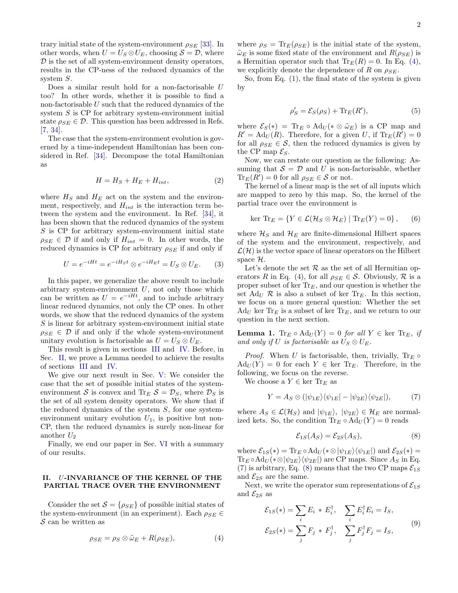
<figcaption class="paper-figure-caption"><b>Fig 1.</b> Low-resolution page preview, page 2</figcaption>
</figure>
<figure class="paper-figure-card">
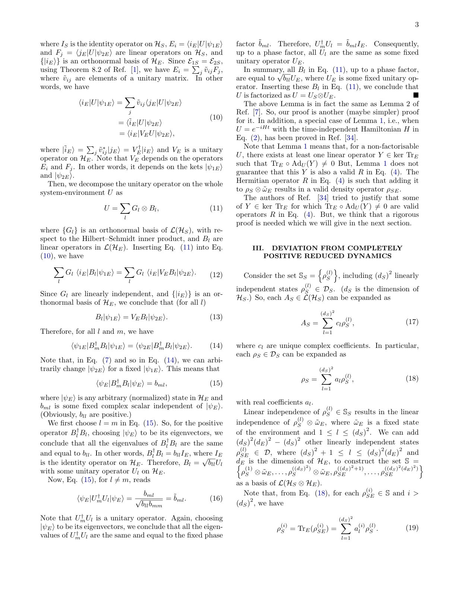
<figcaption class="paper-figure-caption"><b>Fig 2.</b> Low-resolution page preview, page 3</figcaption>
</figure>
<figure class="paper-figure-card">
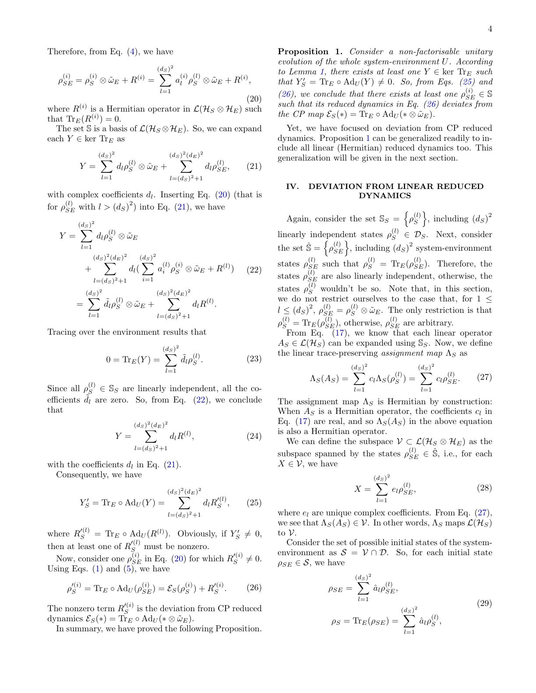
<figcaption class="paper-figure-caption"><b>Fig 3.</b> Low-resolution page preview, page 4</figcaption>
</figure>
<figure class="paper-figure-card">
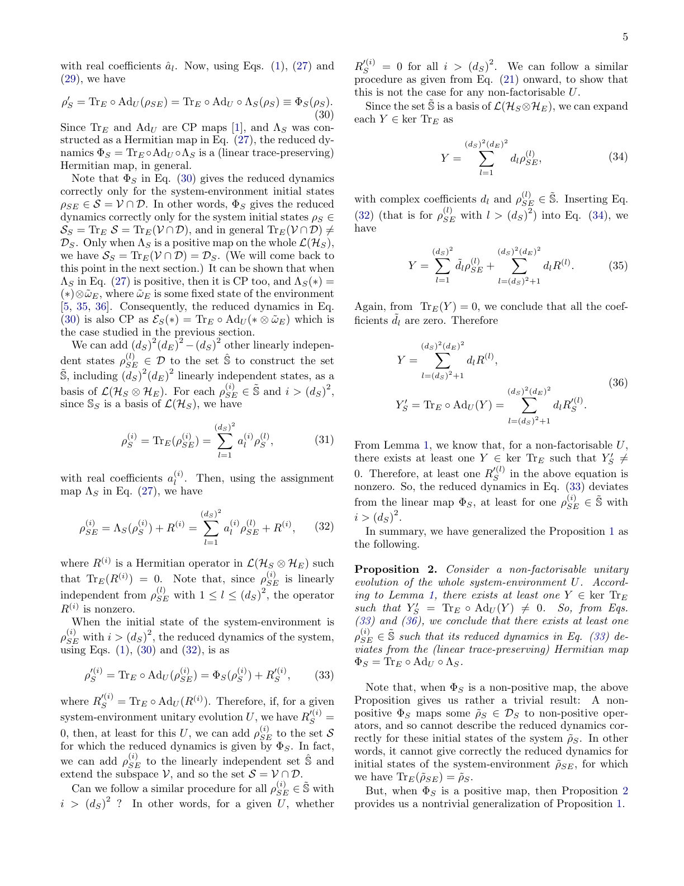
<figcaption class="paper-figure-caption"><b>Fig 4.</b> Low-resolution page preview, page 5</figcaption>
</figure>
<figure class="paper-figure-card">
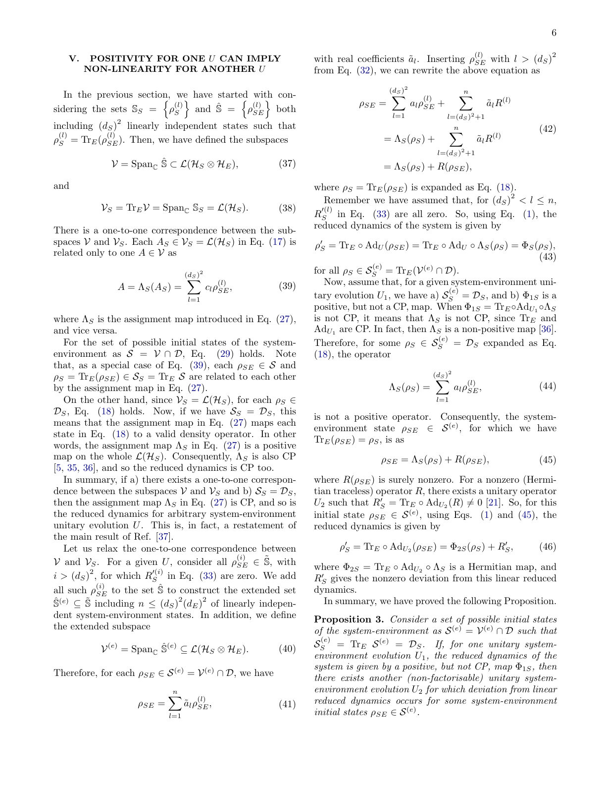
<figcaption class="paper-figure-caption"><b>Fig 5.</b> Low-resolution page preview, page 6</figcaption>
</figure>
</div>

<p><strong>Summary.</strong> This theoretical paper rigorously analyzes when the reduced dynamics of a quantum system coupled to an environment remains linear. It proves that linearity requires the total system-environment unitary evolution to be factorisable. Crucially, it demonstrates that any non-factorisable evolution necessarily leads to a deviation from simple linear or completely positive dynamics.</p>
<p><strong>Why it may be interesting.</strong> This work provides fundamental mathematical constraints on the description of open quantum systems, showing that simple assumptions (like CP maps) fail when initial correlations are present and the total evolution is non-factorisable.</p>
<details>
<summary>Detailed structure</summary>
<p><strong>Main problem.</strong> The paper investigates the conditions under which the reduced dynamics of a quantum system interacting with an environment remains linear, particularly when the total system-environment unitary evolution is non-factorisable.</p>
<p><strong>Main result.</strong> The reduced dynamics is linear for arbitrary initial states if and only if the total unitary evolution $U$ is factorisable ($U=U_S \otimes U_E$). Furthermore, non-factorisable evolution implies deviations from linearity or complete positivity.</p>
<p><strong>Method.</strong> The analysis uses the mathematical framework of reduced density operators ($    ext{Tr}<em SE>E \circ     ext{Ad}_U(
ho</em>)$) and compares the dynamics derived from different assumptions (e.g., CP maps vs. general linear maps) to deduce constraints on the unitary $U$.</p>
<p><strong>Model / system.</strong> The system consists of a quantum system $S$ coupled to an environment $E$, evolving unitarily under $U$. The dynamics are studied by analyzing the reduced density matrix $
ho_S =  ext{Tr}<em SE>E(
ho</em>)$.</p>
<p><strong>Key observables.</strong> Reduced dynamics ($
ho'_S$), deviation from complete positivity (CP), and linearity of the reduced map.</p>
<p><strong>Important parameters / regimes.</strong> The structure of the initial state set $\mathcal{S}$ relative to the full set $\mathcal{D}$, and the factorisability of the unitary $U$.</p>
<p><strong>Assumptions / limitations.</strong> The analysis often starts by considering the simplest approximation (CP map) and then generalizes to arbitrary initial states and unitaries to find where this approximation breaks down.</p>
<p><strong>Paper structure.</strong> The paper progresses by first establishing the necessary and sufficient condition for linear reduced dynamics (factorisability of $U$). It then uses this result to show that non-factorisable $U$ forces deviations from linearity or CP, culminating in proofs that demonstrate this deviation always occurs.</p>
</details>
<details>
<summary>Abstract</summary>
<p>In the simplest approximation, the reduced dynamics of a quantum system $S$ interacting with its environment $E$ is considered to be given by a completely positive map. But, in general, this is not the case. In fact, the reduced dynamics of the system in not even linear, in general. Whether the reduced dynamics is linear or not is determined by two factors: the set of possible initial states of the system-environment $\mathcal{S}=\left\lbrace ρ_{SE} \right\rbrace $, and the joint system-environment unitary evolution $U$. When $U$ is factorisable as $U=U_S\otimes U_E$, then we can choose $\mathcal{S}=\mathcal{D}$, where $\mathcal{D}$ is the set of all system-environment density operators. In other words, when $U$ is factorisable, the reduced dynamics of the system $S$ is linear (in fact unitary) for arbitrary initial state of the system-environment $ρ_{SE}$. We show that this result cannot be generalized to any non-factorisable $U$: For any non-factorisable unitary evolution of the whole system-environment $U$, the set $\mathcal{S}$ must be chosen as a proper subset of $\mathcal{D}$ to achieve linear reduced dynamics. As a byproduct, considering a convex set of possible initial states of the system-environment $\mathcal{S}$ such that $\mathrm{Tr}_{E} \ \mathcal{S}=\mathrm{Tr}_{E} \ \mathcal{D}$, we show that when the reduced dynamics of the system, for one system-environment unitary evolution $U_1$, is positive, but not completely positive, this implies that reduced dynamics is not linear for another $U_2$.</p>
</details>
<p><sub><a href="#top">↑ back to top</a></sub></p>

<p><a id="paper-2608.18204"></a></p>
<h3 id="towards-quantum-dot-detectors-as-barcodes-for-dark-matter-interactions"><a href="http://arxiv.org/abs/2608.18204v1">Towards Quantum-Dot Detectors as Barcodes for Dark Matter Interactions</a></h3>
<p><strong>Authors:</strong> Marek Matas, Andrea Gallo Rosso, Antonio Cammarata, Nora Hoch, Carlos Blanco, Jan Conrad, Rouven Essig, Tim Linden, Lindley Winslow<br>
<strong>Type:</strong> theory · <strong>Category:</strong> other · <strong>PDF:</strong> <a href="https://arxiv.org/pdf/2608.18204v1">https://arxiv.org/pdf/2608.18204v1</a><br>
<strong>Analysis basis:</strong> full PDF text, analyzed in chunks
<strong>Topic relevance:</strong> <code>Keldysh / 2PI / non-Gaussian methods</code> <strong>1/5</strong> · <code>analog quantum simulation</code> <strong>1/5</strong> · <code>quantum measurements</code> <strong>1/5</strong></p>
<div class="figure-strip-hint">↔ Scroll figures horizontally</div>
<div class="paper-figures-scroll">
<figure class="paper-figure-card">
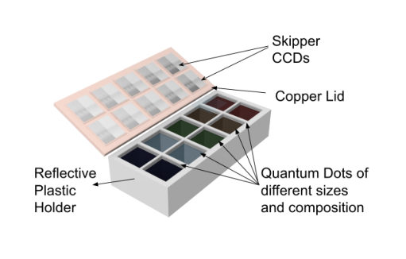
<figcaption class="paper-figure-caption"><b>Fig 1.</b> Figure 1. A CAD rendering of a possible experimental detec- tor design, based on quantum dot (QD) technology and using Skipper CCDs [22] to detect photon signals from the QDs. Here, each section of the detector consists of a 10 cm2 area Skipper CCD and 1 kg of QD target material. Each QD-based scintillator volume, in our benchmark setup, is composed of 50% QDs by weight, loaded in a solid matrix. There are five pairs of volumes, one for each QD combination of diameter and surface termination. We consider independent pairs to separate backgrounds originating in the active volume from those in the photon readout.</figcaption>
</figure>
<figure class="paper-figure-card">
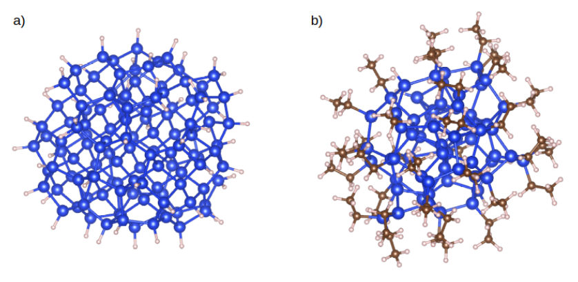
<figcaption class="paper-figure-caption"><b>Fig 2.</b> Figure 2. Model geometry example of a) hydrogen-terminated and b) alkyl-terminated quantum dots with 121 and 63 silicon atoms, respectively (121-Si-H and 63-Si-alk systems). Blue, brown, and white spheres represent the position of the silicon, carbon, and hydrogen atoms, respectively.</figcaption>
</figure>
<figure class="paper-figure-card">
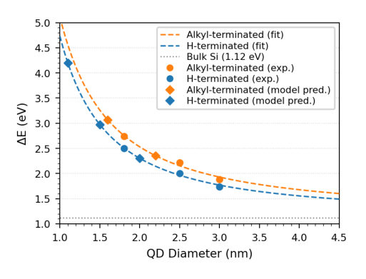
<figcaption class="paper-figure-caption"><b>Fig 3.</b> Figure 3. We show the vertical transition energy (optical gap) ∆E of H-terminated (blue) and Alkyl-terminated (or- ange) quantum dots. The dashed lines show our best-fit model based on the experimental values in Ref. [32] (circles), which is used to predict the transition-energy threshold for our quan- tum dots (diamonds).</figcaption>
</figure>
<figure class="paper-figure-card">
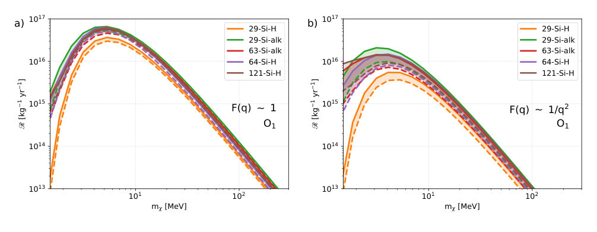
<figcaption class="paper-figure-caption"><b>Fig 4.</b> Figure 4. The effect of screening on the interaction rate for the O1 operator in the heavy (panel a) and light (panel b) mediator limits, with cs 1 = 1 (cℓ 1 = 1), for the five considered quantum dots. Solid lines show the unscreened rates; dashed lines show the rates with maximal screening, corresponding to that of bulk silicon. Because a finite crystal cannot support collective screening on length scales beyond its own size, the screening in QDs is weaker than in the bulk, and the actual rates are expected to lie within the shaded bands. In-medium effects become negligible for DM masses above mχ ∼10 MeV. For heavy mediators, screening plays a sub-dominant role as seen in the vanishing...</figcaption>
</figure>
<figure class="paper-figure-card">
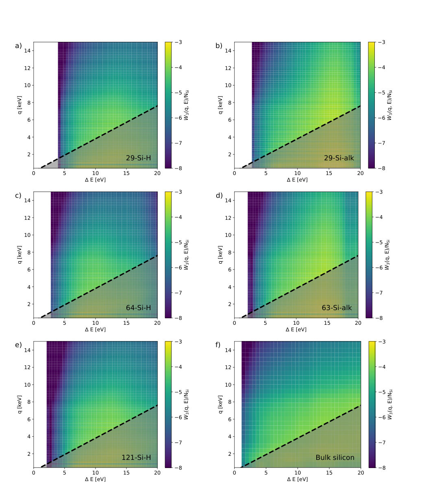
<figcaption class="paper-figure-caption"><b>Fig 5.</b> Figure 5. Material response function W3 normalized by the number of silicon atoms in a unit cell for all considered QDs, as well as for the bulk Si crystal. The shaded region below the dashed black line shows the kinematically inaccessible region. In the shaded region, the minimal DM velocity required to induce an excitation exceeds the galactic escape velocity in the large-mass limit.</figcaption>
</figure>
</div>

<p><strong>Summary.</strong> This paper proposes using quantum dots as highly tunable targets in a dark matter detector array. By calculating how DM scatters off electrons in QDs of varying sizes and surface chemistries, the authors show that the resulting pattern of energy deposition rates—a 'barcode'—can uniquely identify the underlying physics of the dark matter interaction.</p>
<p><strong>Why it may be interesting.</strong> While the core application is particle astrophysics, the underlying physics involves calculating electronic structure responses (form factors, energy thresholds) in nanoscale, confined systems, which touches upon condensed matter theory relevant to AMO physics.</p>
<details>
<summary>Detailed structure</summary>
<p><strong>Main problem.</strong> The paper addresses the search for dark matter (DM) interactions, specifically focusing on detecting low-mass DM (below a GeV) through inelastic energy deposits.</p>
<p><strong>Main result.</strong> The relative rates of energy deposition across an array of quantum dot targets form a unique 'barcode' that can allow discrimination between different hypothesized DM interaction operators and mediator types.</p>
<p><strong>Method.</strong> The authors perform ab initio calculations of DM scattering on electrons bound within quantum dots, modeling the system using effective operators and calculating material response functions.</p>
<p><strong>Model / system.</strong> The physical platform is a detector array using semiconductor quantum dots (e.g., Si QDs) as target subunits, read out by Skipper CCDs. The calculations treat the QDs as finite, non-periodic objects.</p>
<p><strong>Key observables.</strong> The primary observables are the relative scattering rates across different QD morphologies, which form the 'barcode'; also analyzed are the material response functions $W_1(q, E)$ and $W_4(q, E)$.</p>
<p><strong>Important parameters / regimes.</strong> Key parameters include the QD diameter, surface ligand type, DM mass, interaction operator couplings, and the energy threshold set by the QD electronic gap ($\Delta E$).</p>
<p><strong>Assumptions / limitations.</strong> The analysis assumes the non-relativistic limit and that the initial and final state momenta are zero due to the finite nature of the QD environment. The DM flux is modeled using a standard halo model.</p>
<p><strong>Figures summary.</strong> Figures illustrate the detector concept (CAD rendering of QD/Skipper CCD setup) and plot the material response functions ($W_1$ and $W_4$) as functions of momentum transfer and energy, highlighting kinematically inaccessible regions.</p>
<p><strong>Paper structure.</strong> The paper progresses from defining the physical system (QDs) and the detection concept (barcode) to detailing the theoretical framework (ab initio calculations of scattering amplitude using effective operators) and finally presenting the diagnostic power of the barcode strategy.</p>
</details>
<details>
<summary>Abstract</summary>
<p>Quantum dots are tunable semiconductor nanocrystals that can be produced at industrial scales. We present the first ab initio calculation of the scattering of dark matter on electrons bound in quantum dots. The momentum-dependence of a quantum dot's electronic response depends on its morphology and on the dark matter mass, interaction operator, mediator coupling, and mediator mass. Therefore, the relative rates across an array of distinct quantum dot targets form a ``barcode'' that carries information about the nature of the dark matter interaction. We project the sensitivity of a detector concept in which a collection of independent target subunits, each loaded with silicon quantum dots of a particular morphology, are read out by Skipper CCDs. Given a future signal, this barcode could discriminate between interaction operators and mediator types. We quantify the discrimination power for a benchmark pair of models as a function of readout noise and exposure.</p>
</details>
<p><sub><a href="#top">↑ back to top</a></sub></p>

<p><a id="paper-2608.18472"></a></p>
<h3 id="unified-strong-field-dynamics-simulations-from-atoms-to-heterostructures"><a href="http://arxiv.org/abs/2608.18472v1">Unified Strong-Field Dynamics Simulations from Atoms to Heterostructures</a></h3>
<p><strong>Authors:</strong> Zakaria Dahbi, Amelle Zaïr<br>
<strong>Type:</strong> theory · <strong>Category:</strong> other · <strong>PDF:</strong> <a href="https://arxiv.org/pdf/2608.18472v1">https://arxiv.org/pdf/2608.18472v1</a><br>
<strong>Analysis basis:</strong> full PDF text, analyzed in chunks
<strong>Topic relevance:</strong> <code>analog quantum simulation</code> <strong>1/5</strong> · <code>interference shaping light</code> <strong>1/5</strong> · <code>methods for driven-dissipative</code> <strong>1/5</strong></p>
<div class="figure-strip-hint">↔ Scroll figures horizontally</div>
<div class="paper-figures-scroll">
<figure class="paper-figure-card">
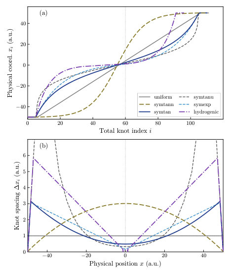
<figcaption class="paper-figure-caption"><b>Fig 1.</b> FIG. 1. Illustration of knot distributions and local grid resolution for the six coordinate mappings. (a) Physical knot positions 𝑥𝑖vs. index 𝑖over [−50, 50] a.u. (𝑁interior = 99, 𝑝= 5). Clustering near the origin is evident for all non-uniform schemes. (b) Grid spacing Δ𝑥𝑖= 𝑥𝑖+1 −𝑥𝑖. The symtan, symexp, and hydrogenic mappings achieve sub-atomic resolution (&lt; 0.2 a.u.) near the Coulomb cusp without increasing the global basis size.</figcaption>
</figure>
<figure class="paper-figure-card">
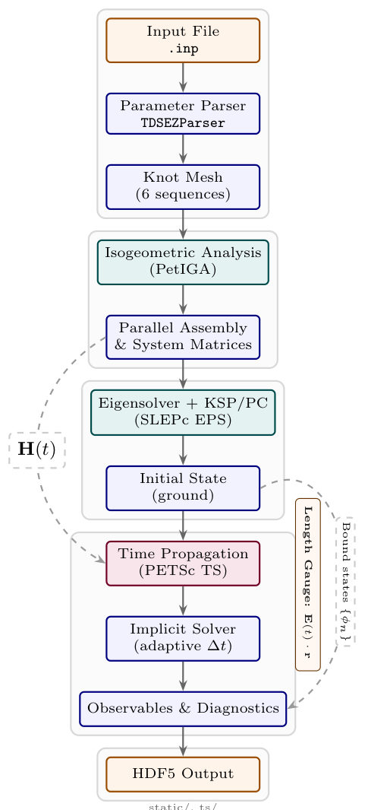
<figcaption class="paper-figure-caption"><b>Fig 2.</b> FIG. 2. Code workflow of TDSE-Z. From input file through ge- ometry/mesh generation, IGA basis construction, parallel assembly of system matrices (mass, BDD kinetic, potential, length-gauge laser, CAP), eigenproblem (Krylov-Schur + shift-invert), initial state preparation, PETSc/TS Crank-Nicolson time propagation, observable computation, automated diagnostics (TRK, dipole-matrix Hermiticity, [𝐻, 𝐿𝑧] commutator), to structured HDF5 output. Dashed arrows indicate run-time feedback loops (length-gauge dipole precompute, bound-state projections). Green = core innovation (BDD operator, IGA, adaptive solvers); Red = time propagation; Yellow = I/O.</figcaption>
</figure>
<figure class="paper-figure-card">
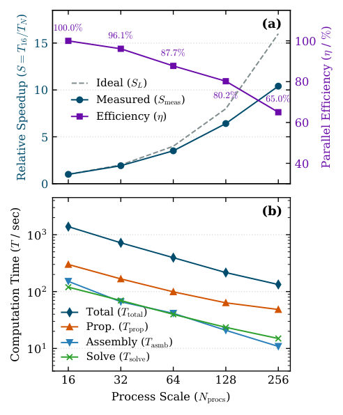
<figcaption class="paper-figure-caption"><b>Fig 3.</b> FIG. 3. Strong scaling on AMD Zen 4. (a): relative speed-up 𝑆= 𝑇16/𝑇𝑁against the number of MPI ranks 𝑁∈{16, 32, 64, 128, 256}, with ideal 1/𝑁scaling overlaid; the parallel efficiency 𝜂= 𝑆/(𝑁/16) is annotated at each rank and falls from 96% (32 ranks) to 65% (256 ranks). (b): wall time in log scale, decomposed into matrix assembly (red), ground-state solve, Crank-Nicolson propagation, HDF5 output, and Total time.</figcaption>
</figure>
<figure class="paper-figure-card">
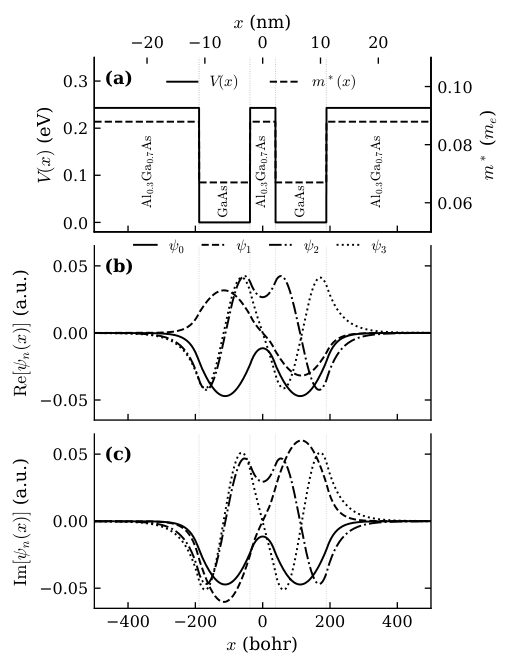
<figcaption class="paper-figure-caption"><b>Fig 4.</b> FIG. 4. (a) Conduction-band potential profile 𝑉(𝑥) (solid curve, left axis, in eV) and position-dependent effective mass 𝑚∗(𝑥) (dashed curve, right axis, in units of 𝑚𝑒) for the symmetric GaAs/Al0.3Ga0.7As double quantum well structure. The configuration defines an inner 4 nm central barrier bounded by two symmetric 8 nm quantum wells, with step heterojunctions located at 𝑥= ±37.79 bohr (±2 nm) and ±188.97 bohr (±10 nm). (b) Real and (c) imaginary components of the first four stationary bound-state eigenfunctions (𝜓0 to 𝜓3). The vanishing imaginary channels reflect the pure real-symmetric nature of the static Hamiltonian. The BenDaniel-Duke operator handles mass discontinuities by sampling...</figcaption>
</figure>
<figure class="paper-figure-card">
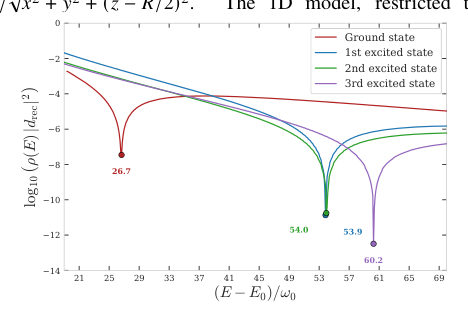
<figcaption class="paper-figure-caption"><b>Fig 5.</b> FIG. 6. Logarithm of the differential recombination probability, log10(𝜌(𝐸)|𝑑rec|2), as a function of the scaled photoelectron energy (𝐸−𝐸0)/𝜔0 for the ground state (red) and the first (blue), second (green), and third (purple) excited states of 1D H+ 2 . 𝑑rec(𝐸𝑖) = ⟨𝜓𝑖| ˆ𝐷𝑥|𝜓𝐸𝑖⟩is the dipole recombination and 𝜌(𝐸𝑖) = (𝐸𝑖+1 −𝐸𝑖)−1</figcaption>
</figure>
</div>

<p><strong>Summary.</strong> The authors present TDSE-Z, a high-performance, open-source framework for simulating strong-field quantum dynamics in materials with position-dependent effective mass. It uses a weak-form Galerkin method on B-splines to solve the time-dependent Schrödinger equation. The code is validated by reproducing known physical results, such as WKB decay in quantum wells and HHG spectra, making it a powerful tool for quantum optics and semiconductor physics.</p>
<p><strong>Why it may be interesting.</strong> This work provides a highly robust and general computational tool for simulating light-matter interactions in solid-state and molecular systems, which is central to quantum optics and condensed matter physics.</p>
<details>
<summary>Detailed structure</summary>
<p><strong>Main problem.</strong> The paper addresses the challenge of simulating strong-field quantum dynamics in complex materials, particularly those with spatially varying effective mass at interfaces.</p>
<p><strong>Main result.</strong> The developed framework, TDSE-Z, successfully implements the BenDaniel-Duke operator using a weak-form Galerkin approach, validating its accuracy across static eigensolvers (WKB comparison) and time propagation (HHG spectra).</p>
<p><strong>Method.</strong> The core method involves a weak-form Galerkin discretization of the time-dependent Schrödinger equation using B-spline basis functions on geometry-adapted meshes.</p>
<p><strong>Model / system.</strong> The system models atomic, molecular, and semiconductor effective-mass systems, governed by the TDSE incorporating the BenDaniel-Duke kinetic operator, which accounts for spatially varying effective mass m(r).</p>
<p><strong>Key observables.</strong> Tunnel splittings, High-Harmonic Generation (HHG) spectra, dipole moment, and total energy expectation values.</p>
<p><strong>Important parameters / regimes.</strong> Strong laser field amplitudes ($E_0$), dimensionality (1D vs 3D), and the effective mass function $m(r)$.</p>
<p><strong>Assumptions / limitations.</strong> The time-propagation engine is currently CPU-optimized, and the framework relies on the weak-form formulation to handle mass-gradient singularities.</p>
<p><strong>Figures summary.</strong> Figures illustrate the comparison of 1D vs 3D HHG spectra showing spectral differences due to dimensionality, and plots demonstrate the time evolution of energy and position expectation values confirming numerical stability.</p>
<p><strong>Paper structure.</strong> The paper details the implementation of the BDD operator via weak-form Galerkin discretization, validates the static eigensolver against WKB theory, and demonstrates the time-propagation engine on benchmarks like HHG and constant-mass systems.</p>
</details>
<details>
<summary>Abstract</summary>
<p>We present \textsc{TDSE-Z}, a high-performance open-source framework for strong-field quantum dynamics in atomic, molecular, and semiconductor effective-mass systems. The core engine implements a weak-form Galerkin discretisation of the Hermitian BenDaniel-Duke operator, $\hat{T}_{\mathrm{BDD}} = -\frac{1}{2}\nabla\cdot(m^{-1}(\mathbf{r})\nabla)$, on geometry-adapted B-spline meshes, supporting arbitrary potentials and customisable laser configurations in one to three dimensions. We validate the static position-dependent-mass (PDM) eigensolver through two stringent benchmarks: a comparison to the analytical Quesne PDM model and a $\text{GaAs/Al}_{0.3}\text{Ga}_{0.7}\text{As}$ double quantum well, where the exponential decay of computed tunnel splittings follows Wentzel-Kramers-Brillouin (WKB) theory at the sub-percent level. We further demonstrate the time-propagation engine on constant-mass systems, accurately reproducing high-harmonic generation (HHG) spectra in atomic benchmarks and confirming the importance of dimensionality in fully capturing the strong light-matter interaction. Our implementation demonstrates robust strong-scaling efficiency, maintaining performance across hundreds of CPU cores. While the static eigensolver currently supports optional GPU offloading, the time-propagation engine is CPU-optimised, providing a modular architecture for future expansion toward exascale quantum dynamics.</p>
</details>
<p><sub><a href="#top">↑ back to top</a></sub></p>

<p><a id="paper-2608.19043"></a></p>
<h3 id="bernstein-vazirani-networks-quantum-machine-learning-by-interference"><a href="http://arxiv.org/abs/2608.19043v1">Bernstein-Vazirani Networks: Quantum Machine Learning by Interference</a></h3>
<p><strong>Authors:</strong> Natacha Kuete Meli, Tolga Birdal, Prayag Tiwari, Vladislav Golyanik, Michael Moeller<br>
<strong>Type:</strong> both · <strong>Category:</strong> quantum information and computing · <strong>PDF:</strong> <a href="https://arxiv.org/pdf/2608.19043v1">https://arxiv.org/pdf/2608.19043v1</a><br>
<strong>Analysis basis:</strong> full PDF text, analyzed in chunks
<strong>Topic relevance:</strong> <code>interference shaping light</code> <strong>1/5</strong> · <code>quantum measurements</code> <strong>1/5</strong></p>
<div class="figure-strip-hint">↔ Scroll figures horizontally</div>
<div class="paper-figures-scroll">
<figure class="paper-figure-card">
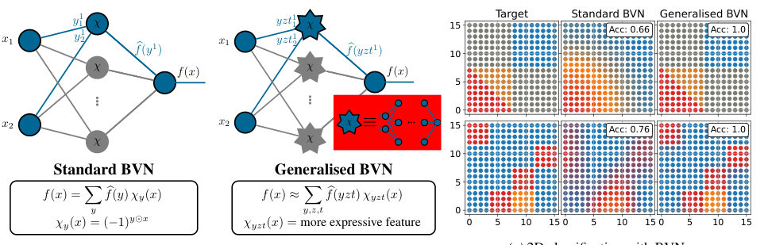
<figcaption class="paper-figure-caption"><b>Fig 1.</b> Figure 1. The proposed standard (1a) and generalised (1b) Bernstein–Vazirani Networks (BVNs). In the standard setting, binary inputs xi are linearly combined in a hidden layer with optimised binary weights yj, passed through a parity activation χ, and linearly combined at the output layer using Fourier coefficients bf(yj). In the generalised setting, inputs pass through expressive optimised sub-models χ (cartooned in the red box) before the output combination, enabling richer representations. (1c): Illustratively, we classify 2D points where the target function (left) is a sum of expressive sub-models χ of the generalised basis. The generalised model fits the boundaries exactly, while the...</figcaption>
</figure>
<figure class="paper-figure-card">

<figcaption class="paper-figure-caption"><b>Fig 2.</b> Figure 2. The Bernstein–Vazirani algorithm (Bernstein &amp; Vazirani, 1993). The algorithm mainly consists of three steps: (i) initialise the system in a perfect superposition; (ii) call the function oracle; (iii) apply the Hadamard operator for interference. If ˜f satisfies the promise ˜f(x) = s ⊙x, measuring reveals s with certainty.</figcaption>
</figure>
<figure class="paper-figure-card">

<figcaption class="paper-figure-caption"><b>Fig 3.</b> Figure 3. Our generalised Bernstein–Vazirani algorithm. We use three quantum registers: An input register, a register that computes a weighted representation of the inputs, and a weight register controlling this representation. The algorithm has three stages: (i) Prepare a uniform superposition of all inputs (Prep.) and weight configurations, and compute the representations; (ii) Query the oracle encoding the ground-truth labels across all samples in the superposition; (iii) Apply an interference operator so the labels interfere with the basis functions generated by the representation.</figcaption>
</figure>
<figure class="paper-figure-card">

<figcaption class="paper-figure-caption"><b>Fig 4.</b> Figure 5. Real-world classification results on Iris and Penguins datasets, with filled vs. unfilled (original) comparison for BVNs. Filled data substantially improves the generalised BVN, allowing &gt;90% accuracy with only 25% data, comparable to the baselines.</figcaption>
</figure>
<figure class="paper-figure-card">

<figcaption class="paper-figure-caption"><b>Fig 5.</b> Figure 6. Implicit image representation. The top row shows results on the coarse (64×64) training image, while the bottom row shows evaluations on a finer (128×128) test image. The generalised BVN outperforms the standard BVN and is competitive with the benchmarks.</figcaption>
</figure>
</div>

<p><strong>Summary.</strong> This paper introduces Bernstein-Vazirani Networks (BVNs), a non-variational quantum machine learning framework that uses quantum interference for supervised learning. By generalizing the standard BV algorithm, the authors create more expressive models capable of handling complex data structures without relying on gradient optimization. This offers a promising, efficient alternative to current PQC methods for quantum data processing.</p>
<p><strong>Why it may be interesting.</strong> The work provides a quantum algorithm paradigm for ML that bypasses the gradient-based optimization issues (like barren plateaus) plaguing many current quantum simulation and computation approaches.</p>
<details>
<summary>Detailed structure</summary>
<p><strong>Main problem.</strong> To develop Quantum Machine Learning (QML) models that overcome the architectural and trainability challenges associated with existing approaches, particularly Parametrised Quantum Circuits (PQCs).</p>
<p><strong>Main result.</strong> The proposed Bernstein-Vazirani Networks (BVNs) achieve strong generalization capabilities and competitive performance on real-world tasks while remaining gradient-free and more sampling-efficient than PQC models.</p>
<p><strong>Method.</strong> The framework uses quantum interference, generalizing the standard Bernstein-Vazirani algorithm by introducing task-adaptive basis functions and expressive input representations to encode complex data structures.</p>
<p><strong>Model / system.</strong> The model is a quantum circuit architecture (BVN) that processes labelled data by placing it in superposition and interfering the resulting states in a problem-adapted basis, avoiding the need for classical outer-loop optimization.</p>
<p><strong>Key observables.</strong> Accuracy (Acc.) on classification tasks, measurement distribution sparsity, and the ability to reconstruct coefficients in closed form.</p>
<p><strong>Important parameters / regimes.</strong> The measurement budget, the choice of interference operator (Hadamard, Chebyshev, Fourier), and the regularization factor $\lambda$.</p>
<p><strong>Assumptions / limitations.</strong> The authors address the 'leakage' problem and assume that generalizing the interference mechanism allows for universal function approximation without relying on gradient descent.</p>
<p><strong>Figures summary.</strong> Figures illustrate the comparison between standard and generalized BVNs for 2D point classification, showing improved decision boundaries and better fitting of target functions compared to standard models.</p>
<p><strong>Paper structure.</strong> The paper progresses from introducing the limitations of PQCs, detailing the standard BVN mechanism, generalizing it with task-adaptive bases, and finally testing the enhanced model on synthetic and real-world datasets (Iris, Penguins).</p>
</details>
<details>
<summary>Abstract</summary>
<p>We introduce Bernstein-Vazirani Networks (BVNs), a non-variational quantum machine learning framework that leverages quantum interference for supervised learning, demonstrated on vision and representation learning tasks. In their standard form, BVNs follow the principle of quantum Fourier sampling: labelled data are placed in superposition and interfered in the Fourier basis to extract globally informative features. We then define generalised BVNs that enable interference in problem-adapted bases, yielding more expressive models under the same measurement budget as in the standard setting. BVNs achieve universal function approximation through (over)complete interference bases, while training of BVNs is gradient-free. Experiments on synthetic and real-world classification tasks, as well as implicit image representation, show strong generalisation capabilities and competitive performance with classical and quantum baselines.</p>
</details>
<p><sub><a href="#top">↑ back to top</a></sub></p>

<p><a id="paper-2608.18199"></a></p>
<h3 id="chern-insulator-boundary-criticality"><a href="http://arxiv.org/abs/2608.18199v1">Chern insulator boundary criticality</a></h3>
<p><strong>Authors:</strong> Benjamin Moy, Eduardo Fradkin<br>
<strong>Type:</strong> theory · <strong>Category:</strong> other · <strong>PDF:</strong> <a href="https://arxiv.org/pdf/2608.18199v1">https://arxiv.org/pdf/2608.18199v1</a><br>
<strong>Analysis basis:</strong> full PDF text, analyzed in chunks
<strong>Topic relevance:</strong> <code>Keldysh / 2PI / non-Gaussian methods</code> <strong>1/5</strong> · <code>analog quantum simulation</code> <strong>1/5</strong></p>
<div class="figure-strip-hint">↔ Scroll figures horizontally</div>
<div class="paper-figures-scroll">
<figure class="paper-figure-card">

<figcaption class="paper-figure-caption"><b>Fig 1.</b> Figure 1: A plot of the Chern number C for the lattice model Hamiltonian in Eq. (2.1) as the parameter m is varied. In a given gapped phase, the Hall conductivity is σxy = C e2/h. For most of this work, we focus on the transition at m = 0 between a Chern insulator with C = 1 and a trivial insulator.</figcaption>
</figure>
<figure class="paper-figure-card">

<figcaption class="paper-figure-caption"><b>Fig 2.</b> Figure 2: Mass domain wall configurations. The y &gt; 0 region is regarded as vacuum with fixed Dirac mass M &lt; 0 while we tune to criticality in the material bulk, y &lt; 0, by a sign change in the Dirac mass. The heavy fermion doubler has a mass of fixed sign throughout space and contributes 1/2 to the Chern number (depicted in gray) so that the y &gt; 0 region has vanishing Chern number. When the y &lt; 0 region has the same sign as the Dirac mass in the y &gt; 0 region, there is no protected edge mode, modeling a trivial insulator phase. (a) When the Dirac mass changes sign in space across y = 0, there is a localized chiral edge mode, and the bulk is in its Chern insulator phase with Chern number C =...</figcaption>
</figure>
<figure class="paper-figure-card">

<figcaption class="paper-figure-caption"><b>Fig 3.</b> Figure 3: For a generic point r = (τ, x, y) and r′ = 0, we plot the ratio of current correlation functions ⟨J+(r) J+(0)⟩/⟨J+(r) J+(0)⟩|y=0 from Eqs. (4.19) and (4.20) as a function of |y|/|ρ| for various values of m|ρ| ≥0. We recall that |y| denotes the distance from the boundary while |ρ| = √</figcaption>
</figure>
</div>

<p><strong>Summary.</strong> This theoretical work examines the chiral signatures at the boundary during a quantum phase transition into a Chern insulator. By employing conformal field theory methods, the authors demonstrate that the bulk topological anomaly is precisely accounted for by delocalized chiral modes near the boundary. This provides a generalized understanding of the bulk-edge correspondence beyond simple free Dirac models.</p>
<p><strong>Why it may be interesting.</strong> The rigorous application of CFT techniques to boundary anomalies in topological phases provides deep insights into how bulk topological invariants manifest at boundaries, which is crucial for understanding edge states in quantum materials.</p>
<details>
<summary>Detailed structure</summary>
<p><strong>Main problem.</strong> The paper investigates the signatures of chirality and anomaly matching at quantum phase transitions involving Chern insulators, particularly when a boundary is present.</p>
<p><strong>Main result.</strong> The analysis shows that while the chiral edge mode delocalizes into the bulk at criticality, the boundary fermion correlation function retains a chiral structure, and the bulk Hall anomaly is matched by these delocalized chiral modes.</p>
<p><strong>Method.</strong> The authors use a Dirac mass domain wall construction and analyze the system using the residual conformal symmetry of a (2+1)d CFT in a half-space to identify parity-odd terms in correlation functions.</p>
<p><strong>Model / system.</strong> The primary model is the transition between a trivial insulator and a Chern insulator ($C=1$), described by a massless Dirac fermion in 2+1 dimensions, and later extended to (3+1)d topological insulator transitions.</p>
<p><strong>Key observables.</strong> Hall conductivity ($\sigma_{xy}$), fermion two-point function, current and energy-momentum tensor correlation functions, and anomaly coefficients.</p>
<p><strong>Important parameters / regimes.</strong> Chern number ($C$), mass parameter ($m$), and the critical point where the bulk gap closes.</p>
<p><strong>Assumptions / limitations.</strong> The analysis relies on studying the transition using the domain wall picture and generalizing the framework to arbitrary time-reversal breaking (2+1)d CFTs.</p>
<p><strong>Figures summary.</strong> Figure 1 plots the Chern number $C$ versus a lattice parameter $m$. Figure 2 illustrates mass domain wall configurations for both $C=1$ and the critical $C=1/2$ transition.</p>
<p><strong>Paper structure.</strong> The paper develops the theory by first establishing the lattice model and the domain wall construction for the $C=1$ transition, then calculating correlation functions using CFT techniques, and finally generalizing the results to higher Chern numbers and (3+1)d systems.</p>
</details>
<details>
<summary>Abstract</summary>
<p>We investigate signatures of chirality at Chern insulator transitions in the presence of a boundary. The transition between a trivial insulator and a Chern insulator with Chern number $C=1$ is described by a massless Dirac fermion whose parity anomaly gives a critical Hall conductivity $σ_{xy}=\frac{1}{2}\frac{e^2}{h}$. Using a Dirac mass domain wall construction, we show that the chiral edge mode delocalizes into the bulk at criticality, but the boundary fermion correlation function retains a chiral structure and acquires the scaling dimension of the bulk fermion. We compute current correlation functions and demonstrate that the anomaly of the bulk Hall response is matched by delocalized chiral modes near the boundary. Using only the residual conformal symmetry of a (2+1)d conformal field theory (CFT) in a half-space, we identify parity-odd terms in current and energy-momentum tensor correlation functions that encode these modes and determine their electromagnetic and gravitational anomaly coefficients. Our analysis therefore applies to general time-reversal breaking (2+1)d CFTs, beyond the free Dirac transition. We also extend our results to higher Chern number transitions and to the transition between a (3+1)d topological insulator and a trivial insulator.</p>
</details>
<p><sub><a href="#top">↑ back to top</a></sub></p>

<p><a id="paper-2608.19178"></a></p>
<h3 id="chiral-bosonic-mean-field-ansatz-and-spin-dynamics-in-spin-1-kitaev-magnets"><a href="http://arxiv.org/abs/2608.19178v1">Chiral bosonic mean-field Ansatz and spin dynamics in spin-1 Kitaev magnets</a></h3>
<p><strong>Authors:</strong> Daiki Sasamoto, Arnaud Ralko, Jaime Merino, Joji Nasu<br>
<strong>Type:</strong> theory · <strong>Category:</strong> strongly correlated electrons · <strong>PDF:</strong> <a href="https://arxiv.org/pdf/2608.19178v1">https://arxiv.org/pdf/2608.19178v1</a><br>
<strong>Analysis basis:</strong> full PDF text, analyzed in chunks
<strong>Topic relevance:</strong> <code>Keldysh / 2PI / non-Gaussian methods</code> <strong>1/5</strong> · <code>analog quantum simulation</code> <strong>1/5</strong></p>
<div class="figure-strip-hint">↔ Scroll figures horizontally</div>
<div class="paper-figures-scroll">
<figure class="paper-figure-card">

<figcaption class="paper-figure-caption"><b>Fig 1.</b> FIG. 1. (a) Schematic picture of the honeycomb lattice on which the S = 1 Kitaev model is defined. The blue, green, and red lines denote the x, y, and z bonds, respectively. The black, white, orange, and purple sites denote the four sublattices A, B, C, and D used in the four-sublattice spin rotation of the pure Kitaev model. (b) First and extended Brillouin zones of the original honeycomb lattice. Filled symbols denote the high-symmetry points.</figcaption>
</figure>
<figure class="paper-figure-card">

<figcaption class="paper-figure-caption"><b>Fig 2.</b> FIG. 2. (a) Mean-field Ansatz for the S = 1 pure AFM Kitaev model considered in this work. The honeycomb lattice on which the mean fields are defined has an eight-sublattice unit cell, whose prim- itive translation vectors are indicated by the gray arrows a1 and a2. The mean-field parameters defined on the x (blue), y (green), z (red) bonds are summarized in the legend. The direction of each arrow specifies the orientation of the bond operator from site i to j. When considering the π/2-flux state, an additional phase factor i is multi- plied to the mean fields on the dotted bonds. (b) Channel interpre- tation of Aij and Dγ i j. The former represents SU(2)-singlet pairing, whereas the latter...</figcaption>
</figure>
<figure class="paper-figure-card">

<figcaption class="paper-figure-caption"><b>Fig 3.</b> FIG. 3. Zero-temperature dynamical spin structure factor S (q, ω) of the pure antiferromagnetic S = 1 Kitaev model calculated directly within SBMFT. Panels (a) and (b) show the 0-flux and π/2-flux Ansätze, respectively. The spectra are plotted along the path connecting the high-symmetry points indicated in Fig. 1. The color scale, common to both panels, indicates the intensity of S (q, ω), and the broadening parameter is set to δ/|K| = 0.01.</figcaption>
</figure>
<figure class="paper-figure-card">

<figcaption class="paper-figure-caption"><b>Fig 4.</b> FIG. 4. Ground-state spin dynamics of the S = 1 Kitaev-Γ-Γ′ model calculated within SBMFT using the π/2-flux Ansatz for K &gt; 0. The upper row shows the dynamical spin structure factor S (q, ω) along the momentum path for (a) Γ = Γ′ = −0.025, (b) 0, and (c) 0.025, in units of |K|. Panels (d)–(f) show the corresponding energy dependence at the representative high-symmetry momenta K, Γ, M, and Γ′. A common color scale is used in panels (a)–(c), and a common vertical intensity scale is used in panels (d)–(f). The broadening parameter is δ/|K| = 0.01.</figcaption>
</figure>
<figure class="paper-figure-card">

<figcaption class="paper-figure-caption"><b>Fig 5.</b> Figure 5 compares the spatial distribution of the equal-time spin correlation Cij = ⟨Si · Sj⟩around a fixed reference site for (a) the nearest-neighbor Kitaev reference, (b) the 0-flux SBMFT Ansatz, and (c) the π/2-flux SBMFT Ansatz. The</figcaption>
</figure>
</div>

<p><strong>Summary.</strong> This work investigates the spin dynamics of the $S=1$ Kitaev magnet using Schwinger-boson mean-field theory. By comparing the 0-flux and $\pi/2$-flux Ansätze, the authors demonstrate that the chiral $\pi/2$-flux Ansatz provides a robust description, particularly near the pure Kitaev limit with weak perturbations. This supports the use of chiral bosonic methods for modeling spin liquid behavior in higher-spin systems.</p>
<p><strong>Why it may be interesting.</strong> The detailed study of spin dynamics and the comparison of different mean-field Ansätze provide valuable insights into the nature of quantum spin liquid ground states, which is central to understanding strongly correlated magnetic materials.</p>
<details>
<summary>Detailed structure</summary>
<p><strong>Main problem.</strong> The paper aims to understand the complex spin dynamics in higher-spin ($S=1$) Kitaev magnets, which are not exactly solvable, by comparing different mean-field descriptions.</p>
<p><strong>Main result.</strong> The triplet $\pi/2$-flux chiral bosonic Ansatz is supported as a useful mean-field description, showing that this flux pattern yields a flatter spectrum and better captures short-range correlations compared to the 0-flux Ansatz.</p>
<p><strong>Method.</strong> The analysis employs Schwinger-boson mean-field theory (SBMFT) using a bond-operator formulation to calculate the dynamical spin structure factor.</p>
<p><strong>Model / system.</strong> The system is the spin-1 Kitaev model on the honeycomb lattice, generalized to include weak symmetric off-diagonal exchanges ($\Gamma$ and $\Gamma'$).</p>
<p><strong>Key observables.</strong> Dynamical spin structure factor $S(oldsymbol{q}, \omega)$, real-space spin correlations, and spectral flatness.</p>
<p><strong>Important parameters / regimes.</strong> The analysis focuses on the pure Kitaev limit and weak perturbations along the line $\Gamma' = \Gamma$.</p>
<p><strong>Assumptions / limitations.</strong> The study relies on the triplet 0-flux and $\pi/2$-flux Ansätze within the SBMFT framework, and spectral flatness is noted as a consistency check, not a definitive diagnostic of chirality.</p>
<p><strong>Figures summary.</strong> Not specified in the notes, but the context suggests figures comparing spectral features and correlation functions between different flux Ansätze.</p>
<p><strong>Paper structure.</strong> The paper first analyzes the pure Kitaev limit by comparing the 0-flux and $\pi/2$-flux Ansätze. It then extends the analysis to weak off-diagonal exchanges ($\Gamma, \Gamma'$) and confirms the utility of the $\pi/2$-flux Ansatz by comparing results to finite-size exact diagonalization.</p>
</details>
<details>
<summary>Abstract</summary>
<p>The Kitaev model is a paradigmatic system for realizing quantum spin liquids, but its higher-spin extensions are not exactly solvable, and their spin dynamics is less well understood than in the spin-1/2 case. In this work, we reexamine a previously introduced triplet-pairing $φ_t = π/2$ phase pattern for the antiferromagnetic $S = 1$ Kitaev model and extend the analysis to weak symmetric off-diagonal exchanges $Γ$ and $Γ'$. Using a bond-operator formulation of Schwinger-boson mean-field theory, we calculate the dynamical spin structure factor for the triplet 0-flux and triplet $π/2$-flux Ansätze with a spin-correlation scheme appropriate for Kitaev interactions. In the pure Kitaev limit, the $π/2$-flux Ansatz yields a flatter spectrum than the 0-flux Ansatz. The real-space spin correlations show that the $π/2$-flux Ansatz suppresses longer-distance correlations more strongly than the 0-flux Ansatz, yielding a correlation pattern closer to the short-ranged form expected in the Kitaev limit. This comparison shows that the flatness of $S(\boldsymbol{q}, ω)$ is tied to short-ranged spin correlations and is therefore an important consistency check, although it is not, by itself, a diagnostic of time-reversal-symmetry breaking. We then study weak off-diagonal exchanges along $Γ' = Γ$ near the pure Kitaev limit, taking the same-sign relation from analyses of candidate spin-1 Kitaev materials. Gapped solutions are obtained within the constrained $π/2$-flux manifold, and the spectra share the qualitative energy- and momentum-space features found by finite-size exact diagonalization. Taken together, these results support the triplet $π/2$-flux chiral bosonic Ansatz as a useful mean-field description of spin dynamics near the antiferromagnetic $S = 1$ Kitaev limit with weak off-diagonal exchanges.</p>
</details>
<p><sub><a href="#top">↑ back to top</a></sub></p>

<p><a id="paper-2608.18732"></a></p>
<h3 id="genuine-tripartite-entanglement-selects-gauge-invariant-theories"><a href="http://arxiv.org/abs/2608.18732v1">Genuine Tripartite Entanglement Selects Gauge-Invariant Theories</a></h3>
<p><strong>Authors:</strong> Junya Yamagishi<br>
<strong>Type:</strong> theory · <strong>Category:</strong> other · <strong>PDF:</strong> <a href="https://arxiv.org/pdf/2608.18732v1">https://arxiv.org/pdf/2608.18732v1</a><br>
<strong>Analysis basis:</strong> full PDF text, analyzed in chunks
<strong>Topic relevance:</strong> <code>Keldysh / 2PI / non-Gaussian methods</code> <strong>1/5</strong> · <code>quantum measurements</code> <strong>1/5</strong></p>
<div class="figure-strip-hint">↔ Scroll figures horizontally</div>
<div class="paper-figures-scroll">
<figure class="paper-figure-card">

<figcaption class="paper-figure-caption"><b>Fig 1.</b> Figure 1: Schematic representation of the 2 + 1-particle system. Particles B and C are initially entangled, and scattering between A and B can generate a tripartite correlation among A, B, and C. Here, particle C is assumed to remain spatially separated from A and B throughout the process.</figcaption>
</figure>
<figure class="paper-figure-card">

<figcaption class="paper-figure-caption"><b>Fig 2.</b> Figure 2: Configuration-averaged concurrence as a function of k at the scattering angle θ = π/2. The results of Ref. [26] are reproduced using the scattering amplitudes given therein.</figcaption>
</figure>
<figure class="paper-figure-card">

<figcaption class="paper-figure-caption"><b>Fig 3.</b> Figure 3: Configuration-averaged concurrence as a function of k at the scattering angle θ = π/6.</figcaption>
</figure>
<figure class="paper-figure-card">

<figcaption class="paper-figure-caption"><b>Fig 4.</b> Figure 2 confirms that, at θ = π/2, k = 1 is an extremum: it is a maximum or a minimum depending on the initial helicities. This observation does not establish whether maximization or minimization of entanglement is the operative principle. At a representa- tive nonspecial angle such as θ = π/6, Fig. 3 shows that k = 1 does not exhibit comparably simple extremal behavior.</figcaption>
</figure>
<figure class="paper-figure-card">

<figcaption class="paper-figure-caption"><b>Fig 5.</b> Figure 4: Configuration-averaged concurrence fill as a function of k for the initial-state parameter η = π/4. The color-factor configurations in Eq. (5.2) are included in the average. Panels (a) and (b) show the results for the scattering angles θ = π/2 and θ = π/6, respectively.</figcaption>
</figure>
</div>

<p><strong>Summary.</strong> This work extends entanglement selection criteria from bipartite to genuine tripartite entanglement in particle scattering. By analyzing gluon and graviton scattering amplitudes, the authors demonstrate that GTE uniquely singles out the gauge-invariant and diffeomorphism-invariant theories. This establishes a non-trivial link between fundamental symmetries and multipartite quantum correlations.</p>
<p><strong>Why it may be interesting.</strong> While the core physics is high-energy theory (gauge/gravity), the methodology heavily relies on advanced quantum information measures (GTE, GGM) applied to scattering states, making it relevant to theoretical quantum physics.</p>
<details>
<summary>Detailed structure</summary>
<p><strong>Main problem.</strong> The paper investigates whether genuine tripartite entanglement (GTE) can uniquely select fundamental physical theories, specifically identifying gauge-invariant and diffeomorphism-invariant theories in scattering processes.</p>
<p><strong>Main result.</strong> The analysis shows that GTE, quantified by measures like the Concurrence Fill (FC) and Generalized Geometric Measure (GGM), uniquely identifies the symmetry-preserving theories as those that suppress GTE in the forward/backward scattering limits.</p>
<p><strong>Method.</strong> The authors use angular expansions around scattering limits and calculate entanglement measures (FC, GGM) for deformed scattering amplitudes in $2+1$-particle systems.</p>
<p><strong>Model / system.</strong> The system involves a $2+1$-particle scattering process (gluon-gluon or graviton-graviton scattering) where the interactions are parameterized by a deformation factor $k$, with $k=1$ recovering the known gauge-invariant theory.</p>
<p><strong>Key observables.</strong> Genuine Tripartite Entanglement (GTE) quantified by Concurrence Fill (FC) and Generalized Geometric Measure (GGM); scattering amplitudes $M(k)$.</p>
<p><strong>Important parameters / regimes.</strong> Deformation parameter $k$, scattering angle $   heta$, and specific color factors for gluon interactions.</p>
<p><strong>Assumptions / limitations.</strong> The analysis focuses on the asymptotic limits (forward and backward scattering) and assumes particle C remains spatially separated from A and B.</p>
<p><strong>Figures summary.</strong> Figures are expected to compare entanglement measures (like concurrence) as a function of the deformation parameter $k$ across different scattering angles.</p>
<p><strong>Paper structure.</strong> The paper builds from kinematics and entanglement measure definitions to analyzing the two-particle setup before focusing on the core $2+1$-particle system analysis using GTE.</p>
</details>
<details>
<summary>Abstract</summary>
<p>Recent studies have explored whether physical constants and symmetries can be selected by extremizing bipartite entanglement entropy. We extend this approach to a three-particle setting. Specifically, we consider a $2+1$-particle system in which particles $B$ and $C$ are initially entangled, and then particles $A$ and $B$ scatter without the direct participation of particle $C$ for both gluon-gluon and graviton-graviton scatterings. Using angular expansions around the forward and backward scattering limits, we analyze bipartite entanglement in the corresponding two-particle system of $A$ and $B$ and two measures of genuine tripartite entanglement (GTE), the concurrence fill and the generalized geometric measure (GGM), in the three-particle system. As is already known, the bipartite entanglement provides no universal criterion for selecting the symmetry-preserving theory: depending on the initial helicities, it may either maximize or minimize the entanglement entropy. By contrast, we find that the GTE-based analysis uniquely identifies the gauge-invariant and diffeomorphism-invariant theories as those that suppress the GTE in gluon-gluon and graviton-graviton scatterings, respectively. This result suggests a nontrivial connection between tripartite entanglement and the gauge and diffeomorphism symmetries of fundamental interactions.</p>
</details>
<p><sub><a href="#top">↑ back to top</a></sub></p>

<p><a id="paper-2608.19095"></a></p>
<h3 id="quantum-magic-in-high-energy-collision"><a href="http://arxiv.org/abs/2608.19095v1">Quantum Magic in High Energy Collision</a></h3>
<p><strong>Authors:</strong> Ying-Ying Li, Ian Low, Yi-Lin Wang, Zhewei Yin<br>
<strong>Type:</strong> theory · <strong>Category:</strong> other · <strong>PDF:</strong> <a href="https://arxiv.org/pdf/2608.19095v1">https://arxiv.org/pdf/2608.19095v1</a><br>
<strong>Analysis basis:</strong> full PDF text, analyzed in chunks
<strong>Topic relevance:</strong> <code>Keldysh / 2PI / non-Gaussian methods</code> <strong>1/5</strong> · <code>quantum measurements</code> <strong>1/5</strong></p>
<div class="figure-strip-hint">↔ Scroll figures horizontally</div>
<div class="paper-figures-scroll">
<figure class="paper-figure-card">

<figcaption class="paper-figure-caption"><b>Fig 1.</b> FIG. 1. The “helicity basis” Ri for the i-th particle projects the spin in the direction of its own</figcaption>
</figure>
<figure class="paper-figure-card">

<figcaption class="paper-figure-caption"><b>Fig 2.</b> FIG. 2. The non-zero angular distributions generated by the rotation R⊗2 y (θ), where we plot M2</figcaption>
</figure>
<figure class="paper-figure-card">

<figcaption class="paper-figure-caption"><b>Fig 3.</b> FIG. 3. Representative s/t/u-channel Feynman diagrams in the fermionic 2 →2 scattering in</figcaption>
</figure>
<figure class="paper-figure-card">

<figcaption class="paper-figure-caption"><b>Fig 4.</b> FIG. 4. Distinct distributions of the s2 W dependence of magic ⟨M2,i⟩for the EW process e−e−→</figcaption>
</figure>
<figure class="paper-figure-card">

<figcaption class="paper-figure-caption"><b>Fig 5.</b> Fig. 6, where we see a local minimum near ˆs2 W(√s) for both of the bases.</figcaption>
</figure>
</div>

<p><strong>Summary.</strong> This paper investigates 'quantum magic,' a quantum resource, by applying it to high-energy particle collisions in QED and electroweak processes. It compares the amount of magic generated when spin is projected using two different reference frames: the lab basis and the helicity basis. The findings highlight basis dependence in quantum resources and confirm the robustness of the weak mixing angle measurement across these different physical bases.</p>
<p><strong>Why it may be interesting.</strong> The concept of basis-dependent quantum resources like 'magic' provides a novel lens through which to view fundamental symmetries and physical constants in particle physics, potentially linking quantum information theory to high-energy phenomenology.</p>
<details>
<summary>Detailed structure</summary>
<p><strong>Main problem.</strong> The paper quantifies 'quantum magic' (non-stabilizerness) as a resource, extending its application from quantum computing to fundamental high-energy physics processes.</p>
<p><strong>Main result.</strong> Magic production is generally smaller in the helicity basis in the ultra-relativistic limit, while the physical weak mixing angle remains close to the magic-minimizing value in both the lab and helicity bases.</p>
<p><strong>Method.</strong> The authors calculate the resource using the second-order Stabilizer Rényi entropy ($M_2$) and compare its value when spin is projected along the incoming beam axis (lab basis) versus the direction of particle motion (helicity basis).</p>
<p><strong>Model / system.</strong> The study models high energy collisions involving Quantum Electrodynamics (QED) and electroweak processes (charged-lepton scattering) using spin-1/2 fermions (qubits).</p>
<p><strong>Key observables.</strong> Quantum Magic ($M_2$), basis dependence of magic, and the value of the weak mixing angle ($\sin^2 	heta_W$).</p>
<p><strong>Important parameters / regimes.</strong> Ultra-relativistic limit, non-relativistic regime, and the weak mixing angle ($\sin^2 	heta_W$).</p>
<p><strong>Assumptions / limitations.</strong> The analysis assumes the applicability of the $M_2$ measure and compares results derived from the lab basis versus the helicity basis.</p>
<p><strong>Figures summary.</strong> Figure 1 illustrates the difference between the helicity and lab bases for spin projection. Figure 2 plots the non-zero angular distributions of $M_2$ generated by rotations.</p>
<p><strong>Paper structure.</strong> The paper systematically compares magic production in the lab and helicity bases for QED and electroweak scattering processes, analyzing both ultra-relativistic and non-relativistic limits, and discussing circuit realizations.</p>
</details>
<details>
<summary>Abstract</summary>
<p>Quantum magic, or nonstabilizerness, is a quantum resource associated with computational advantage in quantum systems. In high energy collisions, Quantum Electrodynamics (QED) is inefficient at generating magic   while the weak mixing angle, a fundamental constant of nature, sits near a value that minimizes magic production in charged-lepton scattering. These observations were made in the laboratory (lab) basis, in which spin is projected along the incoming beam axis. An alternative choice is the helicity basis, in which spin is projected along the direction of motion of each particle. The transformation between these two bases is, in general, not a Clifford operation and therefore can change the amount of magic. We present a detailed study of magic production in both bases for QED and electroweak processes, and compare these results with the basis-invariant non-local magic. In the ultra-relativistic limit, magic production is generally smaller in the helicity basis due to helicity selection rules, while the lab basis generally yields less magic in the non-relativistic regime. We provide circuit realizations of the ultra-relativistic Bhabha amplitudes using linear combinations of unitaries and show that the lab basis construction contains a larger $T$-gate count at generic scattering angles. Interestingly, in both bases the physical weak mixing angle lies close to the value that minimizes magic production.</p>
</details>
<p><sub><a href="#top">↑ back to top</a></sub></p>

<p><a id="paper-2608.19139"></a></p>
<h3 id="entanglement-battery-and-entanglement-catalyst-in-local-state-discrimination-problems"><a href="http://arxiv.org/abs/2608.19139v1">Entanglement battery and entanglement catalyst in local state discrimination problems</a></h3>
<p><strong>Authors:</strong> Saronath Halder, Aby Philip, Alexander Streltsov<br>
<strong>Type:</strong> theory · <strong>Category:</strong> quantum information and computing · <strong>PDF:</strong> <a href="https://arxiv.org/pdf/2608.19139v1">https://arxiv.org/pdf/2608.19139v1</a><br>
<strong>Analysis basis:</strong> full PDF text, analyzed in chunks
<strong>Topic relevance:</strong> <code>quantum measurements</code> <strong>1/5</strong></p>
<div class="figure-strip-hint">↔ Scroll figures horizontally</div>
<div class="paper-figures-scroll">
<figure class="paper-figure-card">

<figcaption class="paper-figure-caption"><b>Fig 1.</b> Low-resolution page preview, page 2</figcaption>
</figure>
<figure class="paper-figure-card">

<figcaption class="paper-figure-caption"><b>Fig 2.</b> Low-resolution page preview, page 3</figcaption>
</figure>
<figure class="paper-figure-card">

<figcaption class="paper-figure-caption"><b>Fig 3.</b> Low-resolution page preview, page 4</figcaption>
</figure>
<figure class="paper-figure-card">

<figcaption class="paper-figure-caption"><b>Fig 4.</b> Low-resolution page preview, page 5</figcaption>
</figure>
<figure class="paper-figure-card">

<figcaption class="paper-figure-caption"><b>Fig 5.</b> Low-resolution page preview, page 6</figcaption>
</figure>
</div>

<p><strong>Summary.</strong> This work analyzes the role of entanglement batteries and catalysts in determining the limits of local state discrimination. It proves that while perfect discrimination of certain entangled state sets is impossible under LOCC, the authors demonstrate specific scenarios where these entanglement resources yield substantial advantages. This deepens the understanding of resource quantification in quantum information tasks.</p>
<p><strong>Why it may be interesting.</strong> It provides rigorous theoretical bounds on what can be achieved in quantum communication tasks (state discrimination) when entanglement is treated as a consumable or reusable resource, which is fundamental to quantum information theory.</p>
<details>
<summary>Detailed structure</summary>
<p><strong>Main problem.</strong> The paper investigates the theoretical limits and advantages of using entanglement batteries and entanglement catalysts in Local State Discrimination Problems (LSDPs).</p>
<p><strong>Main result.</strong> While perfect discrimination of an orthonormal basis of entangled states is impossible using exact entanglement resources under LOCC, the authors construct nontrivial cases where entanglement batteries provide a significant advantage, especially in approximate or many-copy scenarios.</p>
<p><strong>Method.</strong> The analysis employs quantum information theory tools, including entanglement measures (like Squashed Entanglement) and concepts like local indistinguishability, to derive necessary conditions for perfect discrimination.</p>
<p><strong>Model / system.</strong> The model involves a composite quantum system where a state is chosen from a set $S$ and must be identified using only Local Operations and Classical Communication (LOCC). Resources include entanglement batteries and catalysts, often modeled using maximally entangled GHZ states.</p>
<p><strong>Key observables.</strong> Entanglement measures, von Neumann entropy, and the probability of successful state discrimination or resource recovery.</p>
<p><strong>Important parameters / regimes.</strong> The cardinality of the set $|S|$, the total dimension $D$, and the number of copies $m$ used in the ensemble.</p>
<p><strong>Assumptions / limitations.</strong> The analysis often relies on the assumption that entanglement measures are additive on tensor products, and it distinguishes between exact and approximate resource usage.</p>
<p><strong>Figures summary.</strong> Not specified in the notes, but the text describes constructions involving specific multipartite states and resource transformations.</p>
<p><strong>Paper structure.</strong> The paper progresses from establishing no-go theorems for perfect discrimination (Theorem 1) to constructing specific, nontrivial examples where entanglement batteries provide advantages, covering both exact and approximate resource regimes, and finally addressing the many-copy limit.</p>
</details>
<details>
<summary>Abstract</summary>
<p>In this work, we study the limitations and advantages of using entanglement battery and entanglement catalyst in local state discrimination problems. We consider both cases of such tools, i.e., exact and approximate cases. We show that to distinguish any set of orthogonal pure bipartite entangled states perfectly under local operations and classical communication using an (exact) entanglement battery or an (exact) entanglement catalyst, it is necessary to consider that the cardinality of the set must be smaller than the total dimension of the given Hilbert space. Then, we construct a nontrivial case where an exact entanglement battery can provide huge advantage. We also construct other nontrivial cases where exact or approximate entanglement battery or entanglement catalyst can be useful. In fact, we find that the approximate tools are particularly useful in the local discrimination of certain sets which can be derived from many-copy indistinguishable ensembles.</p>
</details>
<p><sub><a href="#top">↑ back to top</a></sub></p>

<p><a id="paper-2608.18512"></a></p>
<h3 id="integer-linear-programming-decoder-for-abelian-and-non-abelian-topological-codes"><a href="http://arxiv.org/abs/2608.18512v1">Integer Linear Programming Decoder for Abelian and Non-Abelian Topological Codes</a></h3>
<p><strong>Authors:</strong> Dian Jing, Aubrey Zhang, Liang Jiang, Ruben Verresen<br>
<strong>Type:</strong> theory · <strong>Category:</strong> quantum information and computing · <strong>PDF:</strong> <a href="https://arxiv.org/pdf/2608.18512v1">https://arxiv.org/pdf/2608.18512v1</a><br>
<strong>Analysis basis:</strong> full PDF text, analyzed in chunks
<strong>Topic relevance:</strong> <code>analog quantum simulation</code> <strong>1/5</strong></p>
<div class="figure-strip-hint">↔ Scroll figures horizontally</div>
<div class="paper-figures-scroll">
<figure class="paper-figure-card">

<figcaption class="paper-figure-caption"><b>Fig 1.</b> FIG. 1. Example configuration of incoherent anyon errors obtained from the ILP decoder. Given the anyon syndromes, the ILP decoder uses classical optimiza- tion to identify the minimum-weight configuration of incoher- ent anyon errors. These configurations allow anyon strings to terminate on syndromes as well as other anyon strings accord- ing to the fusion rules of the TO, a feature not captured by existing decoders. In the ILP formulation, the fusion channels f and the corresponding multiplicities Nf of incident anyons are encoded as linear constraints. An example anyon-string configuration is shown, with the relevant fusion rules provided in the bottom-left panel. At each lattice site...</figcaption>
</figure>
<figure class="paper-figure-card">

<figcaption class="paper-figure-caption"><b>Fig 2.</b> FIG. 2. Error-correction thresholds for example Abelian TOs. (a) For the Abelian Z2 TO under single- qubit depolarizing noise, the ILP decoder achieves an error- correction threshold of 18.039(7)%, exceeding most exist- ing decoders, including uncorrelated MWPM [59], union- intersection union-find (UIUF) [60], renormalization group with belief propagation (RG-BP) [61], deep Q-learning based on deep reinforcement learning [62], belief propaga- tion with approximate degenerate ordered-statistics decod- ing (BP-ADOSD) [63, 64], matrix product states (MPS) [65], and belief propagation with MWPM (BP-MWPM) [66]. This threshold is also close to the optimal value of 18.9(3)% [67, 68] and to that...</figcaption>
</figure>
<figure class="paper-figure-card">

<figcaption class="paper-figure-caption"><b>Fig 3.</b> FIG. 3. Error-correction phase diagrams of the Abelian Z3 2 and non-Abelian D4 TOs defined on the three-colorable kagome lattice. (a) Error-correction phase diagram of the Abelian Z3 2 TO using the MWPM de- coder. In addition to the quantum-memory and no-memory phases, there are two classical-memory phases, in which only the logical ˆZL operator is protected (I) or only the logical ˆ XL operator is protected (II). (b) Error-correction phase diagram of the non-Abelian D4 TO obtained using the ILP decoder with an effective weight ratio and the two-step MWPM de- coder. The classical-memory-II phase is absent because pro- liferation of the non-Abelian m-anyons necessarily entails pro-...</figcaption>
</figure>
<figure class="paper-figure-card">

<figcaption class="paper-figure-caption"><b>Fig 4.</b> FIG. 4. Examples of fusion channels for spacetime ILP decoding. (a) At the previous time step, a measurement error misidentified the vacuum as an a anyon. At the current time step, assuming that no anyon strings of other species are present and no measurement error occurs, the absence of a defect ∆implies that an a anyon is created by a physical error at (s, t). This configuration is analogous to standard spacetime matching of defects in the Abelian Z2 TO [14]. (b) An a anyon was not identified at the previous time step due to a measurement error and then fused with another a anyon created by a physical error at time t, leading to a probabilistic syndrome measurement at (s, t) that yields...</figcaption>
</figure>
<figure class="paper-figure-card">

<figcaption class="paper-figure-caption"><b>Fig 5.</b> FIG. 5. Runtime distribution and upper-tail behavior. Median, mean, 90th-percentile, and 99th-percentile optimization times versus the number of physical qubits N = 2d2 at (a) the subthreshold error rate p = 0.10 and (b) p = 0.18, near the error-correction threshold. The lower panels enlarge the small-N region. The growing separation among the median, mean, and upper percentiles demonstrates substantial decoder-instance variability and a pronounced upper tail. The 99th percentile characterizes this tail and should not be interpreted as a worst-case runtime.</figcaption>
</figure>
</div>

<p><strong>Summary.</strong> This paper introduces an Integer Linear Programming (ILP) decoder to solve the minimum-weight error detection problem for arbitrary topological codes. By encoding complex anyon fusion rules as linear constraints, the ILP decoder overcomes the limitations of simpler matching or clustering decoders. It demonstrates superior performance across Abelian and non-Abelian topological orders, establishing ILP as a powerful general tool for fault-tolerant quantum computation.</p>
<p><strong>Why it may be interesting.</strong> The rigorous mathematical framework provided by ILP offers a powerful, general tool for analyzing fault-tolerance thresholds in complex quantum systems beyond simple nearest-neighbor models.</p>
<details>
<summary>Detailed structure</summary>
<p><strong>Main problem.</strong> Developing a general-purpose, high-performance decoder for topological codes (TOs) that can handle arbitrary fusion rules and correlated noise, surpassing limitations of existing matching-based and clustering decoders.</p>
<p><strong>Main result.</strong> The Integer Linear Programming (ILP) decoder is shown to provide a clear performance advantage over existing methods for various TOs, including $\mathbb{Z}_2$, $\mathbb{Z}_3$, and non-Abelian $D_4$ systems.</p>
<p><strong>Method.</strong> The error-correction problem is formulated as an ILP, linearizing the constraints by introducing auxiliary variables to encode complex anyon fusion rules and correlations.</p>
<p><strong>Model / system.</strong> The study focuses on Topological Orders (TOs) used as quantum error-correcting codes, tested on Abelian ($\mathbb{Z}_2, \mathbb{Z}_3$) and non-Abelian ($D_4$) systems.</p>
<p><strong>Key observables.</strong> Error syndromes ($\sigma$), error configurations ($E$), and the error-correction threshold.</p>
<p><strong>Important parameters / regimes.</strong> The noise model (e.g., depolarizing noise) and the specific topological order being analyzed.</p>
<p><strong>Assumptions / limitations.</strong> The ILP formulation requires careful construction of variables and constraints; some analyses use big-M relaxations or assume certain error loop configurations are rare.</p>
<p><strong>Figures summary.</strong> Figures compare error-correction thresholds for $\mathbb{Z}_2$ and $\mathbb{Z}_3$ TOs, demonstrating the ILP decoder's superior performance compared to other decoding methods.</p>
<p><strong>Paper structure.</strong> The paper introduces the ILP framework, applies it to Abelian TOs ($\mathbb{Z}_2, \mathbb{Z}_3$) to establish general applicability, and then extends the method to the non-Abelian $D_4$ TO, detailing the multi-step decoding process.</p>
</details>
<details>
<summary>Abstract</summary>
<p>Topological orders (TOs) are widely used as quantum error-correcting codes, with anyon excitations serving as error syndromes. For certain Abelian TOs, decoding can be performed by independently matching particle-antiparticle pairs of each species. However, matching-based decoders cannot handle more general fusion rules in either Abelian or non-Abelian TOs, nor account for noise that correlates different anyon species. While clustering decoders are more broadly applicable, they typically neglect anyon data and fusion properties, leading to poor performance in practice. In this work, we introduce a fundamentally different decoder for arbitrary TOs based on integer linear programming (ILP). The ILP formulation linearizes the error-correction problem through the introduction of auxiliary variables and encodes fusion rules as linear constraints. Classical optimization then identifies the minimum-weight error configuration. As concrete examples, we determine error-correction thresholds for three TOs: the Abelian $\mathbb{Z}_2$ TO under depolarizing noise, where charge and flux errors are correlated; the Abelian $\mathbb{Z}_3$ TO, which does not admit a pairwise matching decoder; and the non-Abelian $D_4$ TO under noise channels that generate all anyon species. We demonstrate the versatility of the ILP decoder by showing a clear performance advantage over most existing decoders in all three cases. We further extend the method to incorporate noisy syndrome measurements and propose a just-in-time variant for continuous error correction. Our results establish ILP as a natural framework for handling correlated errors and general anyon fusion rules, and as a powerful and flexible general-purpose decoder for incoherent anyon noise in arbitrary TOs, with applications to fault-tolerant quantum computation.</p>
</details>
<p><sub><a href="#top">↑ back to top</a></sub></p>

<p><a id="paper-2608.18910"></a></p>
<h3 id="on-the-slow-convergence-to-trivial-solutions-of-algorithms-for-hard-optimization-problems"><a href="http://arxiv.org/abs/2608.18910v1">On the Slow Convergence to Trivial Solutions of Algorithms for Hard Optimization Problems</a></h3>
<p><strong>Authors:</strong> Ali Hussaini Umar, Jean Barbier, Matthieu Jonckheere, Manuel Sáenz<br>
<strong>Type:</strong> theory · <strong>Category:</strong> disordered systems and neural networks · <strong>PDF:</strong> <a href="https://arxiv.org/pdf/2608.18910v1">https://arxiv.org/pdf/2608.18910v1</a><br>
<strong>Analysis basis:</strong> full PDF text, analyzed in chunks
<strong>Topic relevance:</strong> <code>analog quantum simulation</code> <strong>1/5</strong></p>
<div class="figure-strip-hint">↔ Scroll figures horizontally</div>
<div class="paper-figures-scroll">
<figure class="paper-figure-card">

<figcaption class="paper-figure-caption"><b>Fig 1.</b> Figure 1: Average performance ratio of the degree greedy (DG), static degree greedy (SDG), and max-product (MP) algorithms as a function of mean degree λ. The solid blue line represents the theoretical asymptotic performance of SDG, while the blue dots with error bars represent its finite-size simulation results. The red dashed line represents the DG simulation results. The orange dots with error bars represent the MP numerical results, and the orange diamonds represent the population dynamics (PD) predictions. For all three algorithms, the finite-size performance remains above the 1/2 asymptotic threshold. This provides comprehensive (both theoretical and numerical) evidence that local...</figcaption>
</figure>
<figure class="paper-figure-card">

<figcaption class="paper-figure-caption"><b>Fig 2.</b> Figure 2: Convergence of the performance ratio of static degree greedy (SDG) towards the half-bound threshold. The plot displays RSDG(λ) given by (11), interpreted as a natural performance lower bound for a large class of non-trivial algorithms for MIS, on Erdős-Rényi graphs G(n, λ/n) as a function of the degree λ in the limit of large n. The blue solid line represents the convergence of the theoretical results of SDG, while the red dashed line represents a power law fit for large values of λ.</figcaption>
</figure>
<figure class="paper-figure-card">

<figcaption class="paper-figure-caption"><b>Fig 3.</b> Figure 3: Heatmap of the performance ratios of the degree greedy (DG) and static degree greedy (SDG) algorithms on Erdős-Rényi graphs G(n, λ/n). The left panel presents the results for DG, while the right panel shows the results for SDG. Both greedy algorithms achieve high ratios (above 1/2) for sparser graphs, but the ratios fall below 1/2 for denser graphs.</figcaption>
</figure>
<figure class="paper-figure-card">

<figcaption class="paper-figure-caption"><b>Fig 4.</b> Figure 4: Asymptotic performance of RC for Max K-SAT. On the left, we compare the ratio of satisfied clauses as a function of the clause density (α = m/n) of RC on simulations (n = 1000, ten simulations for each point) with the predictions from the limit equations for K = 4. Here we can appreciate that this ratio converges asymptotically, as argued, to the random assignment performance. On the right, asymptotic ratio of satisfied clauses as a function of clause density (α = m/n) for different values of K. These simulations suggest that the convergence to the limit follows a similar rate of decay for all K considered. In both graphs, the asymptotic performance of random assignments are...</figcaption>
</figure>
</div>

<p><strong>Summary.</strong> This paper analyzes how well algorithms perform on hard optimization problems like MIS and Max K-SAT, moving beyond worst-case asymptotic guarantees. It demonstrates that even when theory predicts failure in the limit, sophisticated algorithms can achieve surprisingly good results in finite, intermediate regimes. This highlights the continued practical importance of algorithmic design even when asymptotic theory suggests otherwise.</p>
<p><strong>Why it may be interesting.</strong> The study of algorithmic performance on highly constrained random systems, particularly the gap between finite-size and asymptotic behavior, is highly relevant to understanding the complexity of optimization problems encountered in quantum simulation and machine learning models.</p>
<details>
<summary>Detailed structure</summary>
<p><strong>Main problem.</strong> The paper investigates the algorithmic performance of solving hard, NP-hard combinatorial optimization problems, such as Maximum Independent Set (MIS) and Max K-SAT.</p>
<p><strong>Main result.</strong> While asymptotic theory predicts that no polynomial-time algorithm significantly outperforms heuristics in the limit, the study shows that convergence to these bounds can be remarkably slow, especially in the intermediate constraint regime.</p>
<p><strong>Method.</strong> The analysis combines rigorous average-case asymptotic analysis (using density evolution and population dynamics) with the study of finite-size behavior of various local and greedy algorithms.</p>
<p><strong>Model / system.</strong> The primary models are random graphs, specifically sparse Erdős-Rényi graphs $G(n, \lambda/n)$ and graphs derived from the configuration model, used to represent the constraints of the optimization problems.</p>
<p><strong>Key observables.</strong> Performance ratios (e.g., $\sigma_A(G) / \sigma(G)$) comparing the algorithm's output size to the true maximum value ($\sigma(G)$).</p>
<p><strong>Important parameters / regimes.</strong> Graph size ($n$), mean degree ($\lambda$), and the constraint density regime (easy, intermediate, hard).</p>
<p><strong>Assumptions / limitations.</strong> The analysis relies heavily on asymptotic limits ($n 	o \infty$) and approximations like Population Dynamics for message-passing algorithms.</p>
<p><strong>Figures summary.</strong> Figure 1 compares the average performance ratio of different algorithms (DG, SDG, MP) versus the mean degree $\lambda$. Figure 2 quantifies the convergence rate of the SDG algorithm towards a theoretical threshold.</p>
<p><strong>Paper structure.</strong> The paper first establishes the negative results in the double asymptotic limit. It then revisits the problem by analyzing finite-size behavior, applying techniques like density evolution and population dynamics to MIS and Max K-SAT to demonstrate slow convergence in intermediate regimes.</p>
</details>
<details>
<summary>Abstract</summary>
<p>Hard combinatorial optimization problems, many of which are NP-hard, present fundamental algorithmic challenges. Average-case analysis on random instances has emerged as a powerful framework for understanding typical algorithmic performance beyond worst-case guarantees. A substantial body of work has established negative results: for sufficiently hard instances (often controlled by the underlying graph connectivity/constraints density), no known polynomial-time algorithm can significantly outperform naive heuristics in the double asymptotic limit where both problem size and constraints density tend to infinity. We revisit this picture by studying the finite-size behavior of some optimization algorithms across easy, intermediate, and hard regimes. Through rigorous analysis of large-graph asymptotics combined with numerical experiments on canonical problems (maximum independent set and maximum $K$-SAT), we demonstrate that while algorithms do eventually converge to theoretically predicted bounds, this convergence can be remarkably slow. In the intermediate regime where instances are already highly constrained, local algorithms achieve solutions substantially better than their predicted performance in the high-constraint-density limit. This gap between finite-regime and asymptotic behavior has important practical implications: sophisticated algorithmic design remains crucial even when asymptotic theory predicts inevitable failure.</p>
</details>
<p><sub><a href="#top">↑ back to top</a></sub></p>

<p><a id="paper-2608.18347"></a></p>
<h3 id="quantum-geometric-bounds-on-casimir-repulsion"><a href="http://arxiv.org/abs/2608.18347v1">Quantum-geometric bounds on Casimir repulsion</a></h3>
<p><strong>Authors:</strong> Adolfo G. Grushin<br>
<strong>Type:</strong> theory · <strong>Category:</strong> other · <strong>PDF:</strong> <a href="https://arxiv.org/pdf/2608.18347v1">https://arxiv.org/pdf/2608.18347v1</a><br>
<strong>Analysis basis:</strong> full PDF text, analyzed in chunks
<strong>Topic relevance:</strong> <code>analog quantum simulation</code> <strong>1/5</strong></p>
<div class="figure-strip-hint">↔ Scroll figures horizontally</div>
<div class="paper-figures-scroll">
<figure class="paper-figure-card">

<figcaption class="paper-figure-caption"><b>Fig 1.</b> FIG. 1. Schematic Casimir energy per area E/A between two Chern- insulating sheets with Chern numbers C1C2 &gt; 0 and densities ni=1,2 as a function of separation d. At short distances the dielectric response dominates and the interaction is attractive; beyond the force-crossover distance dF , where E/A is maximal, the Hall response drives Casimir repulsion. Quantum geometry bounds dF from below by Eq. (1). Within the leading large-distance description, repulsion is excluded at separations smaller than this bound.</figcaption>
</figure>
<figure class="paper-figure-card">

<figcaption class="paper-figure-caption"><b>Fig 2.</b> FIG. 2. Geometric bounds overestimate attraction. Energy per unit area of two identical Landau-level sheets, with Chern number C and cyclotron gap Eg = ℏωc, as a function of separation d. The dashed red curve shows the large-distance Casimir energy, Eq. (9). The solid blue curve shows the exact result using Landau level optical conductivities. Filled circles mark the zeros of the energy, dex × = 1.021 ℏc/Eg (exact) and d× = 3/ √</figcaption>
</figure>
<figure class="paper-figure-card">

<figcaption class="paper-figure-caption"><b>Fig 3.</b> FIG. 3. Flat-band-induced increase of the repulsive region. We plot the force sign-change distance for two identical C = 3 flat-band Chern-insulator sheets in the three-band model of Refs. [18, 61]. It is plotted as a function of the model parameter ∆, that controls the flatness ratio of the lowest band with ∆= 1 achieving the maximal flatness. The solid line is the value obtained from the Kubo polar- izability, Eq. (21); the dashed line is the minimum value obtained by inserting the Chern susceptibility bound. Distances are in lattice- constant units a = 1. We see that when flattening the band helps to saturate the geometric bounds it reduces dF and increases the region where repulsion can...</figcaption>
</figure>
</div>

<p><strong>Summary.</strong> This theoretical work establishes new quantum-geometric bounds governing the Casimir force between 2D topological materials. It shows that these bounds constrain the force's sign and magnitude, suggesting that the repulsion onset occurs at shorter distances than previously predicted. The findings offer new optimization strategies for observing repulsive Casimir forces in materials like twisted TMDs.</p>
<p><strong>Why it may be interesting.</strong> The work connects topological invariants (Chern numbers) and geometric properties (quantum metric) directly to macroscopic forces like the Casimir effect, providing new theoretical constraints for condensed matter systems.</p>
<details>
<summary>Detailed structure</summary>
<p><strong>Main problem.</strong> The paper derives new quantum-geometric bounds on the magnitude and sign of the Casimir force between two-dimensional plates in the long-distance limit.</p>
<p><strong>Main result.</strong> The derived bounds show that increasing the Chern number can be counterproductive for maximizing repulsion, and the true crossover to repulsion occurs at shorter, more experimentally accessible distances than the bounds suggest.</p>
<p><strong>Method.</strong> The analysis uses the Lifshitz scattering formula, applying quantum geometric bounds derived from the material's DC response (like conductivity and polarizability) to constrain the Casimir energy.</p>
<p><strong>Model / system.</strong> The system involves two-dimensional insulating plates, specifically modeling Chern insulators, Landau levels, and twisted bilayer materials like MoTe2.</p>
<p><strong>Key observables.</strong> Casimir force ($F/A$), crossover distance ($d_F$), dielectric susceptibility, and Hall conductivity.</p>
<p><strong>Important parameters / regimes.</strong> Separation distance ($d$), Chern numbers ($C_1, C_2$), and the effective Bohr radius ($a^*_\perp$).</p>
<p><strong>Assumptions / limitations.</strong> The bounds are derived using the leading large-distance approximation, which is noted to be overly conservative compared to full finite-frequency calculations.</p>
<p><strong>Figures summary.</strong> Figures compare the calculated Casimir energy/force for various models (Landau levels, Chern insulators) against the derived geometric bounds, showing discrepancies in the crossover distance.</p>
<p><strong>Paper structure.</strong> The paper develops the Casimir energy calculation using the Lifshitz formula, separates the energy into dielectric and Hall terms, derives the quantum-geometric bounds, and then benchmarks these bounds against exact results from specific physical models.</p>
</details>
<details>
<summary>Abstract</summary>
<p>The quantum geometric tensor has been shown to bound the gap, optical absorption, and dielectric susceptibilities of materials. Here we derive new quantum-geometric bounds on the magnitude and sign of the Casimir force between two-dimensional plates in the long-distance limit. These bounds limit the previously attributed benefit of increasing the plate's Chern number to maximize repulsion, and give a quantum geometric origin to the stronger attractive force of metallic plates, regardless of their Chern number. These bounds allow us to infer that flat Chern bands that saturate geometric bounds, including Landau levels and moiré flat bands, enlarge the window where Casimir repulsion exists and bring the repulsive crossover to smaller, more experimentally relevant distances. We derive estimates for material platforms such as twisted MoTe$_2$. Our work shows that quantum-geometric bounds constrain repulsive Casimir forces beyond previously known theorems, and suggests new optimization strategies to observe repulsion.</p>
</details>
<p><sub><a href="#top">↑ back to top</a></sub></p>
<hr>
<p>
<a href="index.html">← Index</a>
 · <a href="papers_02.html">← Previous</a> · <a href="papers_04.html">Next →</a>
</p>
<hr>

</body>
</html>
